4 Chapter 4
#-*- R -*-
# initialization
library(nlme)
library(lattice)
options(width = 65, digits = 5)
options(contrasts = c(unordered = "contr.helmert", ordered = "contr.poly"))
#pdf(file = 'ch04.pdf')
# Chapter 4 Fitting Linear Mixed-Effects Models
# 4.1 Fitting Linear Models in S with lm and lmList
fm1Orth.lm <- lm(distance ~ age, Orthodont)
fm1Orth.lm##
## Call:
## lm(formula = distance ~ age, data = Orthodont)
##
## Coefficients:
## (Intercept) age
## 16.76 0.66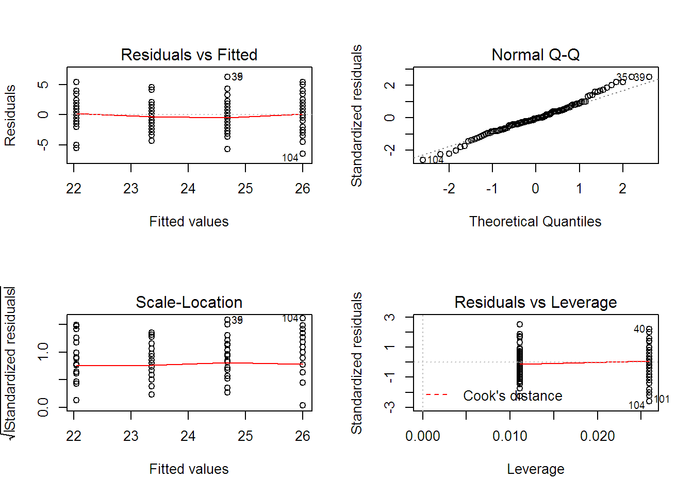
##
## Call:
## lm(formula = distance ~ Sex + age + Sex:age, data = Orthodont)
##
## Residuals:
## Min 1Q Median 3Q Max
## -5.616 -1.322 -0.168 1.330 5.247
##
## Coefficients:
## Estimate Std. Error t value Pr(>|t|)
## (Intercept) 16.8567 1.1094 15.19 < 2e-16 ***
## Sex1 0.5161 1.1094 0.47 0.64
## age 0.6320 0.0988 6.39 4.7e-09 ***
## Sex1:age -0.1524 0.0988 -1.54 0.13
## ---
## Signif. codes: 0 '***' 0.001 '**' 0.01 '*' 0.05 '.' 0.1 ' ' 1
##
## Residual standard error: 2.26 on 104 degrees of freedom
## Multiple R-squared: 0.423, Adjusted R-squared: 0.406
## F-statistic: 25.4 on 3 and 104 DF, p-value: 2.11e-12##
## Call:
## lm(formula = distance ~ age + Sex:age, data = Orthodont)
##
## Residuals:
## Min 1Q Median 3Q Max
## -5.742 -1.242 -0.189 1.268 5.267
##
## Coefficients:
## Estimate Std. Error t value Pr(>|t|)
## (Intercept) 16.7611 1.0861 15.43 < 2e-16 ***
## age 0.6403 0.0968 6.61 1.6e-09 ***
## age:Sex1 -0.1074 0.0196 -5.47 3.0e-07 ***
## ---
## Signif. codes: 0 '***' 0.001 '**' 0.01 '*' 0.05 '.' 0.1 ' ' 1
##
## Residual standard error: 2.25 on 105 degrees of freedom
## Multiple R-squared: 0.422, Adjusted R-squared: 0.411
## F-statistic: 38.3 on 2 and 105 DF, p-value: 3.31e-13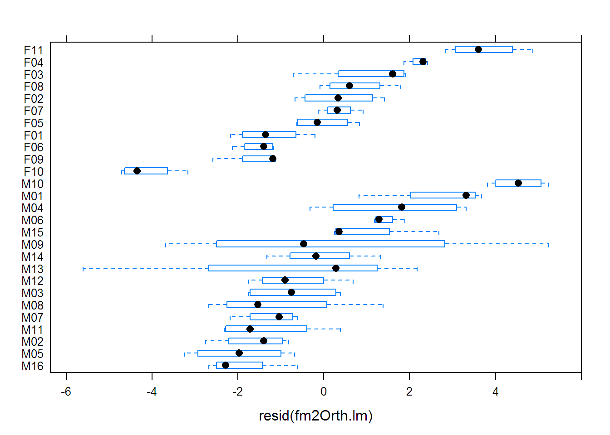
## ~Subject
## <environment: 0x0000000010875218>## distance ~ age | Subject## Call:
## Model: distance ~ age | Subject
## Data: Orthodont
##
## Coefficients:
## (Intercept) age
## M16 16.95 0.550
## M05 13.65 0.850
## M02 14.85 0.775
## M11 20.05 0.325
## M07 14.95 0.800
## M08 19.75 0.375
## M03 16.00 0.750
## M12 13.25 1.000
## M13 2.80 1.950
## M14 19.10 0.525
## M09 14.40 0.975
## M15 13.50 1.125
## M06 18.95 0.675
## M04 24.70 0.175
## M01 17.30 0.950
## M10 21.25 0.750
## F10 13.55 0.450
## F09 18.10 0.275
## F06 17.00 0.375
## F01 17.25 0.375
## F05 19.60 0.275
## F07 16.95 0.550
## F02 14.20 0.800
## F08 21.45 0.175
## F03 14.40 0.850
## F04 19.65 0.475
## F11 18.95 0.675
##
## Degrees of freedom: 108 total; 54 residual
## Residual standard error: 1.31## Call:
## Model: distance ~ age | Subject
## Data: Orthodont
##
## Coefficients:
## (Intercept)
## Estimate Std. Error t value Pr(>|t|)
## M16 16.95 3.2882 5.15484 3.6952e-06
## M05 13.65 3.2882 4.15124 1.1817e-04
## M02 14.85 3.2882 4.51619 3.4589e-05
## M11 20.05 3.2882 6.09761 1.1888e-07
## M07 14.95 3.2882 4.54660 3.1167e-05
## M08 19.75 3.2882 6.00637 1.6657e-07
## M03 16.00 3.2882 4.86592 1.0285e-05
## M12 13.25 3.2882 4.02959 1.7626e-04
## M13 2.80 3.2882 0.85154 3.9823e-01
## M14 19.10 3.2882 5.80870 3.4496e-07
## M09 14.40 3.2882 4.37933 5.5096e-05
## M15 13.50 3.2882 4.10562 1.3737e-04
## M06 18.95 3.2882 5.76308 4.0782e-07
## M04 24.70 3.2882 7.51177 6.0816e-10
## M01 17.30 3.2882 5.26128 2.5236e-06
## M10 21.25 3.2882 6.46255 3.0655e-08
## F10 13.55 3.2882 4.12083 1.3065e-04
## F09 18.10 3.2882 5.50458 1.0478e-06
## F06 17.00 3.2882 5.17004 3.4998e-06
## F01 17.25 3.2882 5.24607 2.6653e-06
## F05 19.60 3.2882 5.96076 1.9711e-07
## F07 16.95 3.2882 5.15484 3.6952e-06
## F02 14.20 3.2882 4.31851 6.7638e-05
## F08 21.45 3.2882 6.52338 2.4438e-08
## F03 14.40 3.2882 4.37933 5.5096e-05
## F04 19.65 3.2882 5.97596 1.8636e-07
## F11 18.95 3.2882 5.76308 4.0782e-07
## age
## Estimate Std. Error t value Pr(>|t|)
## M16 0.550 0.29293 1.87756 6.5847e-02
## M05 0.850 0.29293 2.90168 5.3616e-03
## M02 0.775 0.29293 2.64565 1.0658e-02
## M11 0.325 0.29293 1.10947 2.7215e-01
## M07 0.800 0.29293 2.73099 8.5114e-03
## M08 0.375 0.29293 1.28015 2.0596e-01
## M03 0.750 0.29293 2.56031 1.3288e-02
## M12 1.000 0.29293 3.41374 1.2222e-03
## M13 1.950 0.29293 6.65680 1.4857e-08
## M14 0.525 0.29293 1.79221 7.8702e-02
## M09 0.975 0.29293 3.32840 1.5779e-03
## M15 1.125 0.29293 3.84046 3.2471e-04
## M06 0.675 0.29293 2.30428 2.5081e-02
## M04 0.175 0.29293 0.59740 5.5273e-01
## M01 0.950 0.29293 3.24305 2.0301e-03
## M10 0.750 0.29293 2.56031 1.3288e-02
## F10 0.450 0.29293 1.53618 1.3033e-01
## F09 0.275 0.29293 0.93878 3.5202e-01
## F06 0.375 0.29293 1.28015 2.0596e-01
## F01 0.375 0.29293 1.28015 2.0596e-01
## F05 0.275 0.29293 0.93878 3.5202e-01
## F07 0.550 0.29293 1.87756 6.5847e-02
## F02 0.800 0.29293 2.73099 8.5114e-03
## F08 0.175 0.29293 0.59740 5.5273e-01
## F03 0.850 0.29293 2.90168 5.3616e-03
## F04 0.475 0.29293 1.62153 1.1073e-01
## F11 0.675 0.29293 2.30428 2.5081e-02
##
## Residual standard error: 1.31 on 54 degrees of freedom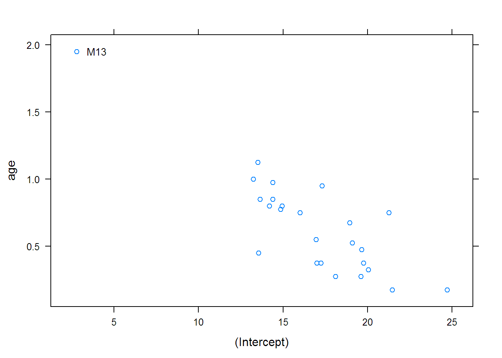
## , , (Intercept)
##
## lower est. upper
## M16 21.687 23.000 24.313
## M05 21.687 23.000 24.313
## M02 22.062 23.375 24.688
## M11 22.312 23.625 24.938
## M07 22.437 23.750 25.063
## M08 22.562 23.875 25.188
## M03 22.937 24.250 25.563
## M12 22.937 24.250 25.563
## M13 22.937 24.250 25.563
## M14 23.562 24.875 26.188
## M09 23.812 25.125 26.438
## M15 24.562 25.875 27.188
## M06 25.062 26.375 27.688
## M04 25.312 26.625 27.938
## M01 26.437 27.750 29.063
## M10 28.187 29.500 30.813
## F10 17.187 18.500 19.813
## F09 19.812 21.125 22.438
## F06 19.812 21.125 22.438
## F01 20.062 21.375 22.688
## F05 21.312 22.625 23.938
## F07 21.687 23.000 24.313
## F02 21.687 23.000 24.313
## F08 22.062 23.375 24.688
## F03 22.437 23.750 25.063
## F04 23.562 24.875 26.188
## F11 25.062 26.375 27.688
##
## , , I(age - 11)
##
## lower est. upper
## M16 -0.037297 0.550 1.1373
## M05 0.262703 0.850 1.4373
## M02 0.187703 0.775 1.3623
## M11 -0.262297 0.325 0.9123
## M07 0.212703 0.800 1.3873
## M08 -0.212297 0.375 0.9623
## M03 0.162703 0.750 1.3373
## M12 0.412703 1.000 1.5873
## M13 1.362703 1.950 2.5373
## M14 -0.062297 0.525 1.1123
## M09 0.387703 0.975 1.5623
## M15 0.537703 1.125 1.7123
## M06 0.087703 0.675 1.2623
## M04 -0.412297 0.175 0.7623
## M01 0.362703 0.950 1.5373
## M10 0.162703 0.750 1.3373
## F10 -0.137297 0.450 1.0373
## F09 -0.312297 0.275 0.8623
## F06 -0.212297 0.375 0.9623
## F01 -0.212297 0.375 0.9623
## F05 -0.312297 0.275 0.8623
## F07 -0.037297 0.550 1.1373
## F02 0.212703 0.800 1.3873
## F08 -0.412297 0.175 0.7623
## F03 0.262703 0.850 1.4373
## F04 -0.112297 0.475 1.0623
## F11 0.087703 0.675 1.2623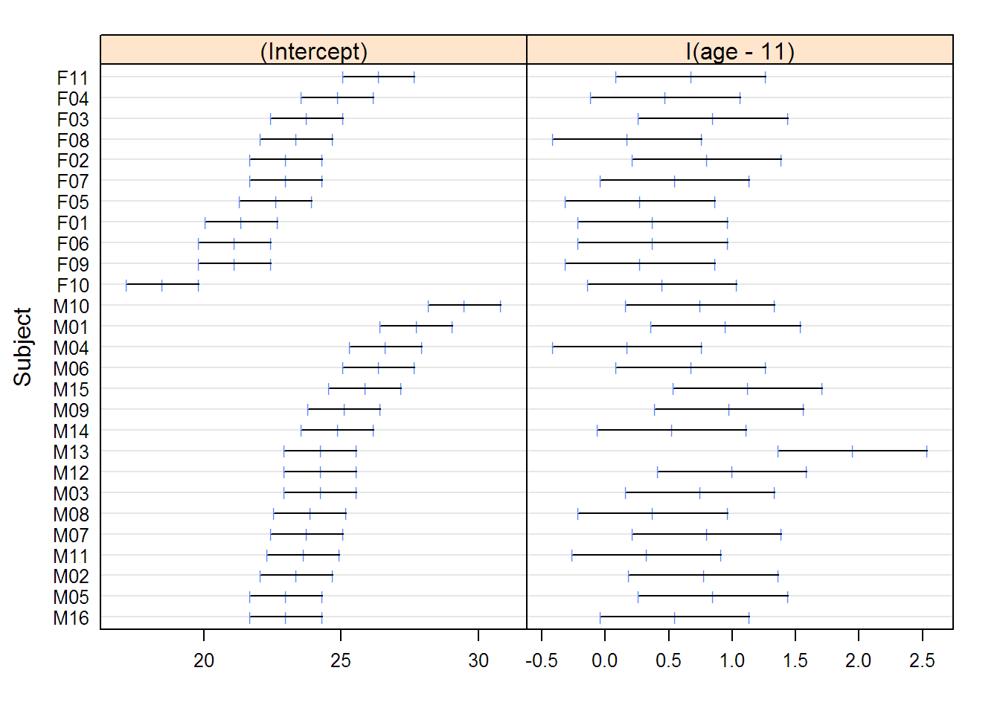
## Grouped Data: conc ~ age | Lot
## Lot age conc
## 1 1 7 4.90
## 2 1 7 5.68
## 3 1 8 5.32
## 4 1 8 5.50
## 5 1 13 4.94
## 6 1 13 5.19
## 7 1 14 5.18
## 8 1 14 5.67
## 9 1 15 5.02
## 10 1 15 5.88
## 11 1 22 5.12
## 12 1 23 5.24
## 13 1 24 5.88
## 14 1 27 5.40
## 15 1 28 5.59
## 16 1 28 5.77
## 17 1 30 5.57
## 18 1 34 5.86
## 19 1 34 5.87
## 20 1 35 4.65
## 21 1 35 5.34
## 22 1 36 4.93
## 23 1 36 5.33
## 24 1 36 4.99
## 25 1 41 3.38
## 26 1 42 5.44
## 27 1 42 5.24
## 28 1 43 5.39
## 29 2 3 5.34
## 30 2 3 5.27
## 31 2 3 5.48
## 32 2 6 5.15
## 33 2 11 4.23
## 34 2 11 5.77
## 35 2 11 5.06
## 36 2 12 5.33
## 37 2 12 5.78
## 38 2 13 5.01
## 39 2 13 4.85
## 40 2 13 4.94
## 41 2 18 5.14
## 42 2 24 5.43
## 43 2 24 5.66
## 44 2 25 5.62
## 45 2 25 5.53
## 46 2 26 6.20
## 47 2 27 5.30
## 48 2 27 4.09
## 49 2 32 5.78
## 50 2 32 5.66
## 51 2 34 5.07
## 52 2 38 5.45
## 53 2 40 4.76
## 54 2 42 4.81
## 55 2 45 4.92
## 56 2 46 4.32
## 57 2 47 3.30
## 58 3 1 5.88
## 59 3 2 5.91
## 60 3 5 0.86
## 61 3 6 5.40
## 62 3 7 4.94
## 63 3 8 5.42
## 64 3 13 5.40
## 65 3 15 5.68
## 66 3 15 5.71
## 67 3 21 9.55
## 68 3 21 5.94
## 69 3 21 6.17
## 70 3 22 5.34
## 71 3 22 8.14
## 72 3 27 5.51
## 73 3 28 5.31
## 74 3 28 4.81
## 75 3 28 5.26
## 76 3 29 4.72
## 77 3 30 5.08
## 78 3 30 3.99
## 79 3 33 4.87
## 80 3 34 4.92
## 81 3 34 6.13
## 82 3 35 6.30
## 83 3 36 5.97
## 84 3 37 5.98
## 85 3 41 6.68
## 86 3 42 5.33
## 87 3 43 6.08
## 88 3 44 4.76
## 89 3 47 5.31
## 90 3 47 6.66
## 91 3 48 5.52
## 92 3 49 5.48
## 93 3 50 5.10
## 94 4 5 5.12
## 95 4 5 5.08
## 96 4 5 4.63
## 97 4 5 5.38
## 98 4 7 5.78
## 99 4 9 9.34
## 100 4 11 5.58
## 101 4 11 5.19
## 102 4 12 5.25
## 103 4 12 5.44
## 104 4 14 5.31
## 105 4 14 4.71
## 106 4 14 5.67
## 107 4 14 4.65
## 108 4 14 5.05
## 109 4 15 4.23
## 110 4 19 5.02
## 111 4 19 4.98
## 112 4 20 5.08
## 113 4 20 4.84
## 114 4 22 4.84
## 115 4 22 5.53
## 116 4 25 5.85
## 117 4 25 5.32
## 118 4 26 5.47
## 119 5 1 5.49
## 120 5 2 5.43
## 121 5 6 5.02
## 122 5 6 5.29
## 123 5 7 6.25
## 124 5 9 4.63
## 125 5 10 5.18
## 126 5 15 5.17
## 127 5 15 4.98
## 128 5 15 5.38
## 129 5 15 3.76
## 130 5 17 5.63
## 131 5 21 6.12
## 132 5 22 4.00
## 133 5 23 6.53
## 134 5 24 4.67
## 135 5 24 5.55
## 136 5 24 5.62
## 137 5 29 4.58
## 138 5 30 5.41
## 139 5 35 4.84
## 140 5 37 4.83
## 141 5 37 5.36
## 142 5 37 4.81
## 143 5 37 5.35
## 144 5 42 5.46
## 145 5 43 5.09
## 146 5 44 4.78
## 147 5 44 4.44
## 148 5 45 4.67
## 149 5 48 4.98
## 150 6 2 4.56
## 151 6 3 5.83
## 152 6 3 5.27
## 153 6 4 4.90
## 154 7 1 4.94
## 155 7 2 4.78
## 156 7 3 5.42
## 157 7 4 5.42
## 158 7 5 5.38
## 159 7 7 5.55
## 160 7 10 5.81
## 161 7 10 5.62
## 162 7 11 6.08
## 163 7 15 4.80
## 164 7 16 5.32
## 165 7 17 4.95
## 166 7 17 5.44
## 167 7 18 5.48
## 168 7 21 5.26
## 169 7 22 5.21
## 170 7 23 4.65
## 171 7 24 4.62
## 172 7 24 5.15
## 173 7 26 4.71
## 174 7 27 5.02
## 175 7 29 5.38
## 176 7 31 5.34
## 177 7 31 5.10
## 178 7 32 5.69
## 179 7 36 5.00
## 180 7 37 5.02
## 181 7 38 9.74
## 182 7 38 9.60
## 183 7 39 5.58
## 184 7 42 4.94
## 185 7 43 4.66
## 186 7 43 5.23
## 187 7 45 5.62
## 188 7 45 5.53
## 189 7 45 5.45
## 190 7 45 4.63
## 191 7 47 5.01
## 192 7 50 5.43
## 193 8 1 6.17
## 194 8 1 5.57
## 195 8 2 4.82
## 196 8 3 5.84
## 197 8 6 5.55
## 198 8 9 5.17
## 199 8 9 6.50
## 200 8 9 5.36
## 201 9 4 5.47
## 202 9 4 5.57
## 203 9 5 5.36
## 204 9 7 4.93
## 205 9 8 5.49
## 206 9 11 3.25
## 207 9 13 5.53
## 208 9 13 4.91
## 209 9 13 5.74
## 210 9 14 4.95
## 211 9 15 5.07
## 212 9 19 5.54
## 213 9 20 5.29
## 214 9 21 4.59
## 215 9 25 5.66
## 216 9 26 4.69
## 217 9 26 5.18
## 218 9 27 5.19
## 219 9 27 5.35
## 220 9 29 5.28
## 221 9 29 5.50
## 222 9 29 5.00
## 223 9 30 5.47
## 224 9 33 5.55
## 225 9 34 5.75
## 226 9 35 5.41
## 227 9 35 5.65
## 228 9 35 5.25
## 229 9 36 5.81
## 230 9 40 4.71
## 231 9 41 4.95
## 232 10 4 6.00
## 233 10 5 5.74
## 234 10 6 5.68
## 235 10 6 5.83
## 236 10 11 5.30
## 237 10 13 5.63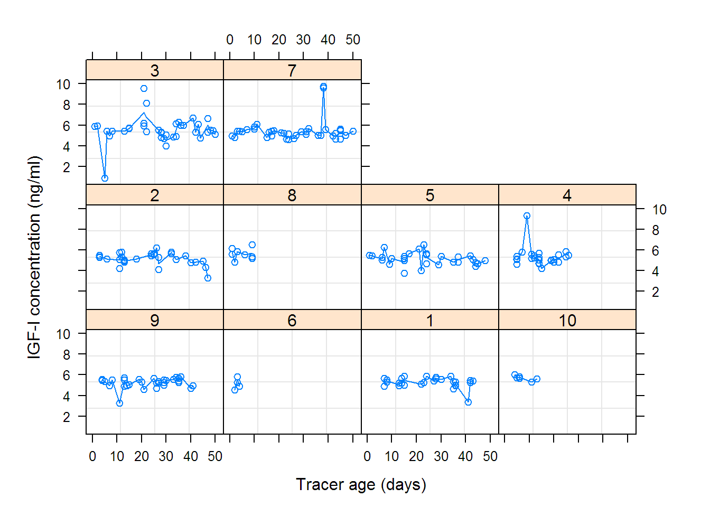
## (Intercept) age
## 9 5.0986 0.0057276
## 6 4.6300 0.1700000
## 1 5.4929 -0.0077901
## 10 6.0516 -0.0473282
## 2 5.4764 -0.0144271
## 8 5.5922 0.0060638
## 5 5.3732 -0.0095140
## 4 5.5768 -0.0166578
## 3 5.2788 0.0100830
## 7 5.2069 0.0093136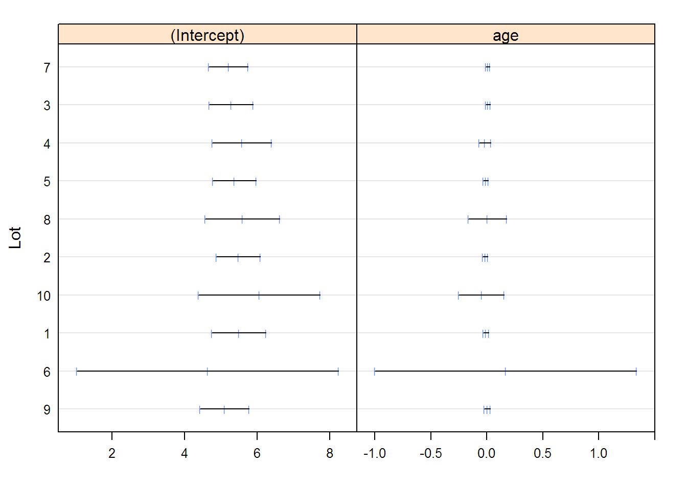
##
## Call:
## lm(formula = conc ~ age, data = IGF)
##
## Residuals:
## Min 1Q Median 3Q Max
## -4.488 -0.374 -0.009 0.258 4.414
##
## Coefficients:
## Estimate Std. Error t value Pr(>|t|)
## (Intercept) 5.351059 0.103734 51.58 <2e-16 ***
## age -0.000669 0.003943 -0.17 0.87
## ---
## Signif. codes: 0 '***' 0.001 '**' 0.01 '*' 0.05 '.' 0.1 ' ' 1
##
## Residual standard error: 0.833 on 235 degrees of freedom
## Multiple R-squared: 0.000123, Adjusted R-squared: -0.00413
## F-statistic: 0.0288 on 1 and 235 DF, p-value: 0.865# 4.2 Fitting Linear Mixed-Effects Models with lme
fm1Orth.lme <- lme(distance ~ I(age-11), data = Orthodont,
random = ~ I(age-11) | Subject)
fm1Orth.lme <- lme(distance ~ I(age-11), data = Orthodont)
fm1Orth.lme <- lme(fm2Orth.lis)
fm1Orth.lme## Linear mixed-effects model fit by REML
## Data: Orthodont
## Log-restricted-likelihood: -221.32
## Fixed: distance ~ I(age - 11)
## (Intercept) I(age - 11)
## 24.02315 0.66019
##
## Random effects:
## Formula: ~I(age - 11) | Subject
## Structure: General positive-definite, Log-Cholesky parametrization
## StdDev Corr
## (Intercept) 2.13433 (Intr)
## I(age - 11) 0.22643 0.503
## Residual 1.31004
##
## Number of Observations: 108
## Number of Groups: 27## Linear mixed-effects model fit by REML
## Data: Orthodont
## AIC BIC logLik
## 451.35 472.51 -217.68
##
## Random effects:
## Formula: ~I(age - 11) | Subject
## Structure: General positive-definite, Log-Cholesky parametrization
## StdDev Corr
## (Intercept) 1.83033 (Intr)
## I(age - 11) 0.18035 0.206
## Residual 1.31004
##
## Fixed effects: distance ~ Sex + I(age - 11) + Sex:I(age - 11)
## Value Std.Error DF t-value p-value
## (Intercept) 23.8082 0.38071 79 62.537 0.0000
## Sex1 -1.1605 0.38071 25 -3.048 0.0054
## I(age - 11) 0.6320 0.06737 79 9.381 0.0000
## Sex1:I(age - 11) -0.1524 0.06737 79 -2.262 0.0264
## Correlation:
## (Intr) Sex1 I(-11)
## Sex1 0.185
## I(age - 11) 0.102 0.019
## Sex1:I(age - 11) 0.019 0.102 0.185
##
## Standardized Within-Group Residuals:
## Min Q1 Med Q3 Max
## -3.1680786 -0.3859391 0.0071036 0.4451545 3.8494635
##
## Number of Observations: 108
## Number of Groups: 27## fixed Subject
## 1 22.616 24.846
## 2 24.184 26.576
## 3 25.753 28.307
## 4 27.322 30.038
## 5 22.616 21.275
## 6 24.184 22.796
## 7 25.753 24.318
## 8 27.322 25.840
## 9 22.616 22.033
## 10 24.184 23.564
## 11 25.753 25.096
## 12 27.322 26.627
## 13 22.616 24.465
## 14 24.184 25.751
## 15 25.753 27.038
## 16 27.322 28.325
## 17 22.616 20.902
## 18 24.184 22.454
## 19 25.753 24.006
## 20 27.322 25.558
## 21 22.616 23.885
## 22 24.184 25.433
## 23 25.753 26.980
## 24 27.322 28.528
## 25 22.616 21.574
## 26 24.184 23.118
## 27 25.753 24.663
## 28 27.322 26.208
## 29 22.616 21.992
## 30 24.184 23.313
## 31 25.753 24.634
## 32 27.322 25.955
## 33 22.616 22.608
## 34 24.184 24.282
## 35 25.753 25.957
## 36 27.322 27.632
## 37 22.616 26.473
## 38 24.184 28.143
## 39 25.753 29.813
## 40 27.322 31.483
## 41 22.616 21.817
## 42 24.184 23.105
## 43 25.753 24.393
## 44 27.322 25.680
## 45 22.616 21.849
## 46 24.184 23.514
## 47 25.753 25.179
## 48 27.322 26.844
## 49 22.616 21.150
## 50 24.184 23.323
## 51 25.753 25.496
## 52 27.322 27.669
## 53 22.616 22.727
## 54 24.184 24.155
## 55 25.753 25.582
## 56 27.322 27.010
## 57 22.616 23.131
## 58 24.184 24.906
## 59 25.753 26.681
## 60 27.322 28.456
## 61 22.616 21.123
## 62 24.184 22.515
## 63 25.753 23.906
## 64 27.322 25.298
## 65 21.209 20.210
## 66 22.168 21.079
## 67 23.127 21.949
## 68 24.086 22.818
## 69 21.209 21.271
## 70 22.168 22.411
## 71 23.127 23.551
## 72 24.086 24.690
## 73 21.209 21.869
## 74 22.168 23.055
## 75 23.127 24.241
## 76 24.086 25.427
## 77 21.209 23.096
## 78 22.168 24.111
## 79 23.127 25.127
## 80 24.086 26.142
## 81 21.209 21.340
## 82 22.168 22.190
## 83 23.127 23.039
## 84 24.086 23.888
## 85 21.209 19.998
## 86 22.168 20.861
## 87 23.127 21.724
## 88 24.086 22.587
## 89 21.209 21.455
## 90 22.168 22.461
## 91 23.127 23.467
## 92 24.086 24.473
## 93 21.209 22.048
## 94 22.168 22.864
## 95 23.127 23.679
## 96 24.086 24.495
## 97 21.209 20.072
## 98 22.168 20.881
## 99 23.127 21.691
## 100 24.086 22.500
## 101 21.209 17.723
## 102 22.168 18.557
## 103 23.127 19.391
## 104 24.086 20.224
## 105 21.209 24.217
## 106 22.168 25.379
## 107 23.127 26.541
## 108 24.086 27.703## M01 M01 M01 M01 M02 M02
## 1.154283 -1.576486 0.692746 0.961977 0.225217 -0.296407
## M02 M02 M03 M03 M03 M03
## -1.318032 0.660344 0.966890 -1.064494 -1.095878 0.872738
## M04 M04 M04 M04 M05 M05
## 1.035486 1.748672 -0.538141 -1.324955 -0.902492 1.045706
## M05 M05 M06 M06 M06 M06
## -1.506096 0.442103 0.614730 0.067279 0.019829 -0.027622
## M07 M07 M07 M07 M08 M08
## 0.426494 -1.118402 -0.163298 0.291806 2.008130 -1.812912
## M08 M08 M09 M09 M09 M09
## -0.133954 -0.454997 0.392480 -3.782285 5.042950 -1.631816
## M10 M10 M10 M10 M11 M11
## 1.027279 -0.142836 1.187049 0.016934 1.182757 -0.104955
## M11 M11 M12 M12 M12 M12
## -0.892667 -0.680378 -0.349193 -0.014198 -1.179204 1.155790
## M13 M13 M13 M13 M14 M14
## -4.150308 1.176924 0.504156 1.831387 -0.227160 1.345200
## M14 M14 M15 M15 M15 M15
## -0.082440 -1.010081 -0.131400 -0.406157 -0.680914 1.544329
## M16 M16 M16 M16 F01 F01
## 0.876807 -1.014648 -0.406104 -0.297560 0.790268 -1.079313
## F01 F01 F02 F02 F02 F02
## -0.448894 0.181525 -0.271239 -0.910917 0.449404 0.809726
## F03 F03 F03 F03 F04 F04
## -1.368686 0.945093 0.258872 0.572650 0.404093 0.388577
## F04 F04 F05 F05 F05 F05
## -0.126940 0.357543 0.159651 0.810487 -0.538676 -0.387840
## F06 F06 F06 F06 F07 F07
## 0.001678 0.138703 -0.724272 -0.087247 0.044844 0.038787
## F07 F07 F08 F08 F08 F08
## -0.467269 0.526674 0.951854 0.136320 -0.179213 -0.494747
## F09 F09 F09 F09 F10 F10
## -0.071889 0.118585 0.309059 -1.000467 -1.223341 0.442963
## F10 F10 F11 F11 F11 F11
## -0.390733 -0.724429 0.282766 -0.379285 1.458663 0.296612
## attr(,"label")
## [1] "Residuals (mm)"## M01 M01 M01 M01 M02
## 0.8811052 -1.2033880 0.5287974 0.7343114 0.1719165
## M02 M02 M02 M03 M03
## -0.2262581 -1.0061006 0.5040641 0.7380620 -0.8125661
## M03 M03 M04 M04 M04
## -0.8365227 0.6661921 0.7904232 1.3348239 -0.4107824
## M04 M05 M05 M05 M05
## -1.0113852 -0.6889046 0.7982247 -1.1496566 0.3374727
## M06 M06 M06 M06 M07
## 0.4692451 0.0513565 0.0151358 -0.0210849 0.3255581
## M07 M07 M07 M08 M08
## -0.8537162 -0.1246512 0.2227459 1.5328775 -1.3838606
## M08 M08 M09 M09 M09
## -0.1022522 -0.3473153 0.2995943 -2.8871533 3.8494635
## M09 M10 M10 M10 M10
## -1.2456233 0.7841584 -0.1090320 0.9061168 0.0129264
## M11 M11 M11 M11 M12
## 0.9028406 -0.0801158 -0.6814043 -0.5193571 -0.2665512
## M12 M12 M12 M13 M13
## -0.0108382 -0.9001287 0.8822558 -3.1680786 0.8983878
## M13 M13 M14 M14 M14
## 0.3848399 1.3979635 -0.1733994 1.0268390 -0.0629297
## M14 M15 M15 M15 M15
## -0.7710306 -0.1003021 -0.3100340 -0.5197659 1.1788415
## M16 M16 M16 M16 F01
## 0.6692984 -0.7745173 -0.3099937 -0.2271380 0.6032397
## F01 F01 F01 F02 F02
## -0.8238783 -0.3426570 0.1385643 -0.2070463 -0.6953357
## F02 F02 F03 F03 F03
## 0.3430464 0.6180928 -1.0447667 0.7214231 0.1976059
## F03 F04 F04 F04 F04
## 0.4371243 0.3084590 0.2966144 -0.0968981 0.2729252
## F05 F05 F05 F05 F06
## 0.1218671 0.6186738 -0.4111909 -0.2960520 0.0012809
## F06 F06 F06 F07 F07
## 0.1058771 -0.5528625 -0.0665984 0.0342312 0.0296079
## F07 F07 F08 F08 F08
## -0.3566833 0.4020292 0.7265839 0.1040580 -0.1368000
## F08 F09 F09 F09 F09
## -0.3776580 -0.0548753 0.0905202 0.2359157 -0.7636924
## F10 F10 F10 F10 F11
## -0.9338198 0.3381295 -0.2982604 -0.5529825 0.2158457
## F11 F11 F11
## -0.2895219 1.1134498 0.2264144
## attr(,"label")
## [1] "Standardized residuals"newOrth <- data.frame(Subject = rep(c("M11","F03"), c(3, 3)),
Sex = rep(c("Male", "Female"), c(3, 3)),
age = rep(16:18, 2))
predict(fm2Orth.lme, newdata = newOrth)## M11 M11 M11 F03 F03 F03
## 26.968 27.612 28.256 26.614 27.207 27.800
## attr(,"label")
## [1] "Predicted values (mm)"## Subject predict.fixed predict.Subject
## 1 M11 28.891 26.968
## 2 M11 29.675 27.612
## 3 M11 30.459 28.256
## 4 F03 25.045 26.614
## 5 F03 25.525 27.207
## 6 F03 26.005 27.800## Linear mixed-effects model fit by maximum likelihood
## Data: Orthodont
## AIC BIC logLik
## 443.81 465.26 -213.9
##
## Random effects:
## Formula: ~I(age - 11) | Subject
## Structure: General positive-definite, Log-Cholesky parametrization
## StdDev Corr
## (Intercept) 1.75219 (Intr)
## I(age - 11) 0.15414 0.234
## Residual 1.31004
##
## Fixed effects: distance ~ Sex + I(age - 11) + Sex:I(age - 11)
## Value Std.Error DF t-value p-value
## (Intercept) 23.8082 0.37332 79 63.775 0.0000
## Sex1 -1.1605 0.37332 25 -3.109 0.0046
## I(age - 11) 0.6320 0.06606 79 9.567 0.0000
## Sex1:I(age - 11) -0.1524 0.06606 79 -2.307 0.0237
## Correlation:
## (Intr) Sex1 I(-11)
## Sex1 0.185
## I(age - 11) 0.102 0.019
## Sex1:I(age - 11) 0.019 0.102 0.185
##
## Standardized Within-Group Residuals:
## Min Q1 Med Q3 Max
## -3.336029 -0.415398 0.010392 0.491695 3.858193
##
## Number of Observations: 108
## Number of Groups: 27## , , (Intercept)
##
## coef(fm2Orth.lis) coef(fm1Orth.lme)
## M16 23.000 23.078
## M05 23.000 23.128
## M02 23.375 23.455
## M11 23.625 23.607
## M07 23.750 23.799
## M08 23.875 23.841
## M03 24.250 24.244
## M12 24.250 24.285
## M13 24.250 24.444
## M14 24.875 24.772
## M09 25.125 25.074
## M15 25.875 25.778
## M06 26.375 26.156
## M04 26.625 26.299
## M01 27.750 27.447
## M10 29.500 28.999
## F10 18.500 18.985
## F09 21.125 21.334
## F06 21.125 21.350
## F01 21.375 21.577
## F05 22.625 22.692
## F07 23.000 23.078
## F02 23.000 23.120
## F08 23.375 23.355
## F03 23.750 23.807
## F04 24.875 24.764
## F11 26.375 26.156
##
## , , I(age - 11)
##
## coef(fm2Orth.lis) coef(fm1Orth.lme)
## M16 0.550 0.59133
## M05 0.850 0.68579
## M02 0.775 0.67469
## M11 0.325 0.54136
## M07 0.800 0.69509
## M08 0.375 0.56545
## M03 0.750 0.69604
## M12 1.000 0.77475
## M13 1.950 1.07385
## M14 0.525 0.64607
## M09 0.975 0.79609
## M15 1.125 0.86836
## M06 0.675 0.74338
## M04 0.175 0.59430
## M01 0.950 0.87587
## M10 0.750 0.87133
## F10 0.450 0.40959
## F09 0.275 0.44214
## F06 0.375 0.47363
## F01 0.375 0.48198
## F05 0.275 0.49223
## F07 0.550 0.59133
## F02 0.800 0.67004
## F08 0.175 0.48578
## F03 0.850 0.71083
## F04 0.475 0.63032
## F11 0.675 0.74338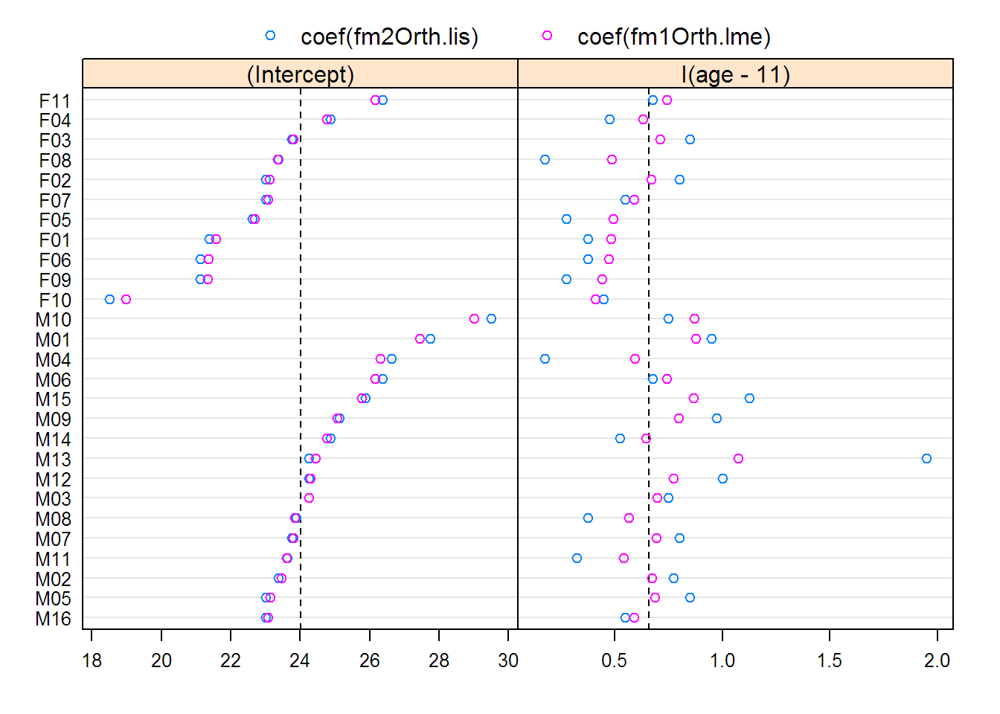
## Figure 4.9
plot(comparePred(fm2Orth.lis, fm1Orth.lme, length.out = 2),
layout = c(8,4), between = list(y = c(0, 0.5, 0)))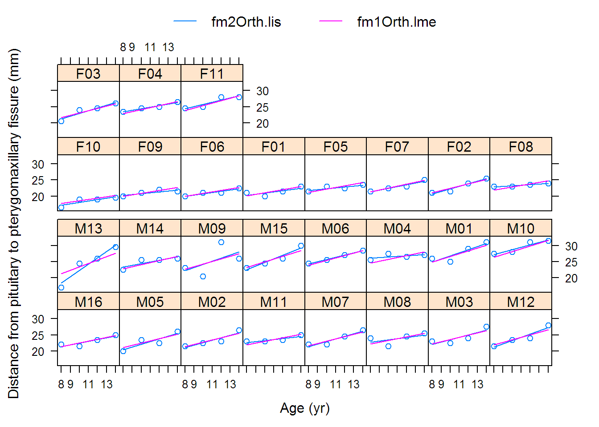
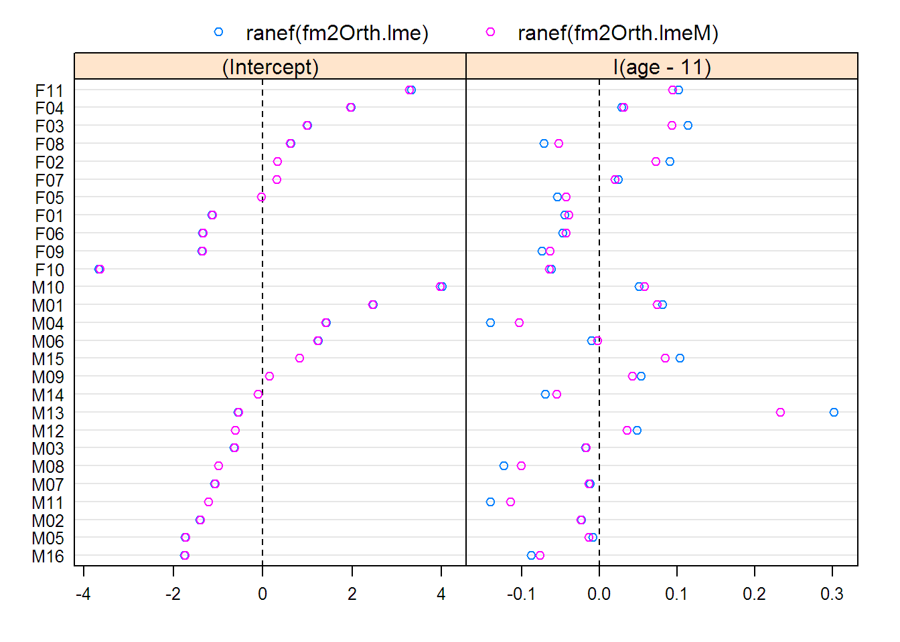
##
## Call:
## lm(formula = distance ~ Sex * I(age - 11), data = Orthodont)
##
## Residuals:
## Min 1Q Median 3Q Max
## -5.616 -1.322 -0.168 1.330 5.247
##
## Coefficients:
## Estimate Std. Error t value Pr(>|t|)
## (Intercept) 23.8082 0.2210 107.73 < 2e-16 ***
## Sex1 -1.1605 0.2210 -5.25 8.1e-07 ***
## I(age - 11) 0.6320 0.0988 6.39 4.7e-09 ***
## Sex1:I(age - 11) -0.1524 0.0988 -1.54 0.13
## ---
## Signif. codes: 0 '***' 0.001 '**' 0.01 '*' 0.05 '.' 0.1 ' ' 1
##
## Residual standard error: 2.26 on 104 degrees of freedom
## Multiple R-squared: 0.423, Adjusted R-squared: 0.406
## F-statistic: 25.4 on 3 and 104 DF, p-value: 2.11e-12## Model df AIC BIC logLik Test L.Ratio
## fm2Orth.lme 1 8 451.35 472.51 -217.68
## fm4Orth.lm 2 5 496.33 509.55 -243.17 1 vs 2 50.977
## p-value
## fm2Orth.lme
## fm4Orth.lm <.0001#fm1IGF.lme <- lme(fm1IGF.lis)
#fm1IGF.lme
#intervals(fm1IGF.lme)
#summary(fm1IGF.lme)
pd1 <- pdDiag(~ age)
pd1## Uninitialized positive definite matrix structure of class pdDiag.## ~age#fm2IGF.lme <- update(fm1IGF.lme, random = pdDiag(~age))
(fm2IGF.lme <- lme(conc ~ age, IGF,
random = pdDiag(~age)))## Linear mixed-effects model fit by REML
## Data: IGF
## Log-restricted-likelihood: -297.4
## Fixed: conc ~ age
## (Intercept) age
## 5.3690370 -0.0019301
##
## Random effects:
## Formula: ~age | Lot
## Structure: Diagonal
## (Intercept) age Residual
## StdDev: 3.6221e-05 0.0053722 0.8218
##
## Number of Observations: 237
## Number of Groups: 10## numDF denDF F-value p-value
## (Intercept) 1 226 6438.9 <.0001
## age 1 226 0.2 0.6732#update(fm1IGF.lme, random = list(Lot = pdDiag(~ age)))
pd2 <- pdDiag(value = diag(2), form = ~ age)
pd2## Positive definite matrix structure of class pdDiag representing
## [,1] [,2]
## [1,] 1 0
## [2,] 0 1## ~age## Linear mixed-effects model fit by REML
## Data: IGF
## Log-restricted-likelihood: -297.4
## Fixed: conc ~ age
## (Intercept) age
## 5.3690370 -0.0019301
##
## Random effects:
## Formula: ~age | Lot
## Structure: Diagonal
## (Intercept) age Residual
## StdDev: 3.1119e-05 0.0053722 0.8218
##
## Number of Observations: 237
## Number of Groups: 10fm4OatsB <- lme(yield ~ nitro, data = Oats,
random =list(Block = pdCompSymm(~ Variety - 1)))
summary(fm4OatsB)## Linear mixed-effects model fit by REML
## Data: Oats
## AIC BIC logLik
## 603.04 614.28 -296.52
##
## Random effects:
## Formula: ~Variety - 1 | Block
## Structure: Compound Symmetry
## StdDev Corr
## VarietyGolden Rain 18.208
## VarietyMarvellous 18.208 0.635
## VarietyVictory 18.208 0.635 0.635
## Residual 12.867
##
## Fixed effects: yield ~ nitro
## Value Std.Error DF t-value p-value
## (Intercept) 81.872 6.9453 65 11.788 0
## nitro 73.667 6.7815 65 10.863 0
## Correlation:
## (Intr)
## nitro -0.293
##
## Standardized Within-Group Residuals:
## Min Q1 Med Q3 Max
## -1.743807 -0.664752 0.017104 0.542988 1.802988
##
## Number of Observations: 72
## Number of Groups: 6## [1] 0.63471fm4OatsC <- lme(yield ~ nitro, data = Oats,
random=list(Block=pdBlocked(list(pdIdent(~ 1),
pdIdent(~ Variety-1)))))
summary(fm4OatsC)## Linear mixed-effects model fit by REML
## Data: Oats
## AIC BIC logLik
## 603.04 614.28 -296.52
##
## Random effects:
## Composite Structure: Blocked
##
## Block 1: (Intercept)
## Formula: ~1 | Block
## (Intercept)
## StdDev: 14.506
##
## Block 2: VarietyGolden Rain, VarietyMarvellous, VarietyVictory
## Formula: ~Variety - 1 | Block
## Structure: Multiple of an Identity
## VarietyGolden Rain VarietyMarvellous VarietyVictory
## StdDev: 11.005 11.005 11.005
## Residual
## StdDev: 12.867
##
## Fixed effects: yield ~ nitro
## Value Std.Error DF t-value p-value
## (Intercept) 81.872 6.9453 65 11.788 0
## nitro 73.667 6.7815 65 10.863 0
## Correlation:
## (Intr)
## nitro -0.293
##
## Standardized Within-Group Residuals:
## Min Q1 Med Q3 Max
## -1.743807 -0.664752 0.017104 0.542988 1.802988
##
## Number of Observations: 72
## Number of Groups: 6## establishing the desired parameterization for contrasts
options(contrasts = c("contr.treatment", "contr.poly"))
fm1Assay <- lme(logDens ~ sample * dilut, Assay,
random = pdBlocked(list(pdIdent(~ 1), pdIdent(~ sample - 1),
pdIdent(~ dilut - 1))))
fm1Assay## Linear mixed-effects model fit by REML
## Data: Assay
## Log-restricted-likelihood: 38.536
## Fixed: logDens ~ sample * dilut
## (Intercept) sampleb samplec sampled
## -0.1827915 0.0807533 0.1339763 0.2076987
## samplee samplef dilut2 dilut3
## -0.0236724 0.0735692 0.2044290 0.4058631
## dilut4 dilut5 sampleb:dilut2 samplec:dilut2
## 0.5731910 0.7206355 0.0089389 -0.0084953
## sampled:dilut2 samplee:dilut2 samplef:dilut2 sampleb:dilut3
## 0.0010793 -0.0419175 0.0193521 -0.0250660
## samplec:dilut3 sampled:dilut3 samplee:dilut3 samplef:dilut3
## 0.0186451 0.0039886 -0.0277128 0.0543160
## sampleb:dilut4 samplec:dilut4 sampled:dilut4 samplee:dilut4
## 0.0607886 0.0052598 -0.0164855 0.0497988
## samplef:dilut4 sampleb:dilut5 samplec:dilut5 sampled:dilut5
## 0.0633719 -0.0457625 -0.0725982 -0.1777566
## samplee:dilut5 samplef:dilut5
## 0.0136109 0.0040234
##
## Random effects:
## Composite Structure: Blocked
##
## Block 1: (Intercept)
## Formula: ~1 | Block
## (Intercept)
## StdDev: 0.0098087
##
## Block 2: samplea, sampleb, samplec, sampled, samplee, samplef
## Formula: ~sample - 1 | Block
## Structure: Multiple of an Identity
## samplea sampleb samplec sampled samplee samplef
## StdDev: 0.025289 0.025289 0.025289 0.025289 0.025289 0.025289
##
## Block 3: dilut1, dilut2, dilut3, dilut4, dilut5
## Formula: ~dilut - 1 | Block
## Structure: Multiple of an Identity
## dilut1 dilut2 dilut3 dilut4 dilut5
## StdDev: 0.0091257 0.0091257 0.0091257 0.0091257 0.0091257
## Residual
## StdDev: 0.041566
##
## Number of Observations: 60
## Number of Groups: 2## numDF denDF F-value p-value
## (Intercept) 1 29 538.02 <.0001
## sample 5 29 11.21 <.0001
## dilut 4 29 420.79 <.0001
## sample:dilut 20 29 1.61 0.1193## Thickness ~ 1 | Lot/Wafer## Linear mixed-effects model fit by REML
## Data: Oxide
## Log-restricted-likelihood: -227.01
## Fixed: Thickness ~ 1
## (Intercept)
## 2000.2
##
## Random effects:
## Formula: ~1 | Lot
## (Intercept)
## StdDev: 11.398
##
## Formula: ~1 | Wafer %in% Lot
## (Intercept) Residual
## StdDev: 5.9888 3.5453
##
## Number of Observations: 72
## Number of Groups:
## Lot Wafer %in% Lot
## 8 24## Approximate 95% confidence intervals
##
## Random Effects:
## Level: Lot
## lower est. upper
## sd((Intercept)) 6.3901 11.398 20.33
## Level: Wafer
## lower est. upper
## sd((Intercept)) 4.0648 5.9888 8.8235
##
## Within-group standard error:
## lower est. upper
## 2.9026 3.5453 4.3304## Model df AIC BIC logLik Test L.Ratio p-value
## fm1Oxide 1 4 462.02 471.07 -227.01
## fm2Oxide 2 3 497.13 503.92 -245.57 1 vs 2 37.11 <.0001## (Intercept)
## 1 1996.7
## 2 1988.9
## 3 2001.0
## 4 1995.7
## 5 2013.6
## 6 2019.6
## 7 1992.0
## 8 1993.8## (Intercept)
## 1/1 2003.2
## 1/2 1984.7
## 1/3 2001.1
## 2/1 1989.6
## 2/2 1988.1
## 2/3 1986.0
## 3/1 2002.5
## 3/2 2000.4
## 3/3 2000.4
## 4/1 1995.7
## 4/2 1999.0
## 4/3 1991.2
## 5/1 2009.2
## 5/2 2016.6
## 5/3 2018.7
## 6/1 2031.3
## 6/2 2021.7
## 6/3 2011.0
## 7/1 1990.2
## 7/2 1991.4
## 7/3 1992.0
## 8/1 1993.7
## 8/2 1995.2
## 8/3 1990.7## Level: Lot
## (Intercept)
## 1 -3.46347
## 2 -11.22164
## 3 0.86902
## 4 -4.47102
## 5 13.46345
## 6 19.40802
## 7 -8.19898
## 8 -6.38538
##
## Level: Wafer %in% Lot
## (Intercept)
## 1/1 6.545993
## 1/2 -11.958939
## 1/3 4.456726
## 2/1 0.658593
## 2/2 -0.833740
## 2/3 -2.923007
## 3/1 1.472819
## 3/2 -0.616447
## 3/3 -0.616447
## 4/1 -0.013509
## 4/2 3.269624
## 4/3 -4.490509
## 5/1 -4.431836
## 5/2 3.029830
## 5/3 5.119096
## 6/1 11.734992
## 6/2 2.184059
## 6/3 -8.560740
## 7/1 -1.749434
## 7/2 -0.555567
## 7/3 0.041366
## 8/1 -0.090197
## 8/2 1.402137
## 8/3 -3.074863fm1Wafer <- lme(current ~ voltage + I(voltage^2), data = Wafer,
random = list(Wafer = pdDiag(~voltage + I(voltage^2)),
Site = pdDiag(~voltage + I(voltage^2))))
summary(fm1Wafer)## Linear mixed-effects model fit by REML
## Data: Wafer
## AIC BIC logLik
## -281.51 -241.67 150.75
##
## Random effects:
## Formula: ~voltage + I(voltage^2) | Wafer
## Structure: Diagonal
## (Intercept) voltage I(voltage^2)
## StdDev: 2.8048e-05 0.18709 0.02501
##
## Formula: ~voltage + I(voltage^2) | Site %in% Wafer
## Structure: Diagonal
## (Intercept) voltage I(voltage^2) Residual
## StdDev: 8.1679e-06 0.13578 2.4475e-08 0.1154
##
## Fixed effects: current ~ voltage + I(voltage^2)
## Value Std.Error DF t-value p-value
## (Intercept) -4.4612 0.051283 318 -86.991 0
## voltage 5.9034 0.092685 318 63.693 0
## I(voltage^2) 1.1704 0.022956 318 50.984 0
## Correlation:
## (Intr) voltag
## voltage -0.735
## I(voltage^2) 0.884 -0.698
##
## Standardized Within-Group Residuals:
## Min Q1 Med Q3 Max
## -1.896615 -0.535367 0.024856 0.798492 1.777664
##
## Number of Observations: 400
## Number of Groups:
## Wafer Site %in% Wafer
## 10 80## 1 1 1 1 1 1 1 1
## 1.0106 4.3083 7.9805 12.0272 16.4484 1.0106 4.3083 7.9805
## 1 1 1 1 1 1 1 1
## 12.0272 16.4484 1.0106 4.3083 7.9805 12.0272 16.4484 1.0106
## 1 1 1 1 1 1 1 1
## 4.3083 7.9805 12.0272 16.4484 1.0106 4.3083 7.9805 12.0272
## 1 1 1 1 1 1 1 1
## 16.4484 1.0106 4.3083 7.9805 12.0272 16.4484 1.0106 4.3083
## 1 1 1 1 1 1 1 1
## 7.9805 12.0272 16.4484 1.0106 4.3083 7.9805 12.0272 16.4484
## 2 2 2 2 2 2 2 2
## 1.0106 4.3083 7.9805 12.0272 16.4484 1.0106 4.3083 7.9805
## 2 2 2 2 2 2 2 2
## 12.0272 16.4484 1.0106 4.3083 7.9805 12.0272 16.4484 1.0106
## 2 2 2 2 2 2 2 2
## 4.3083 7.9805 12.0272 16.4484 1.0106 4.3083 7.9805 12.0272
## 2 2 2 2 2 2 2 2
## 16.4484 1.0106 4.3083 7.9805 12.0272 16.4484 1.0106 4.3083
## 2 2 2 2 2 2 2 2
## 7.9805 12.0272 16.4484 1.0106 4.3083 7.9805 12.0272 16.4484
## 3 3 3 3 3 3 3 3
## 1.0106 4.3083 7.9805 12.0272 16.4484 1.0106 4.3083 7.9805
## 3 3 3 3 3 3 3 3
## 12.0272 16.4484 1.0106 4.3083 7.9805 12.0272 16.4484 1.0106
## 3 3 3 3 3 3 3 3
## 4.3083 7.9805 12.0272 16.4484 1.0106 4.3083 7.9805 12.0272
## 3 3 3 3 3 3 3 3
## 16.4484 1.0106 4.3083 7.9805 12.0272 16.4484 1.0106 4.3083
## 3 3 3 3 3 3 3 3
## 7.9805 12.0272 16.4484 1.0106 4.3083 7.9805 12.0272 16.4484
## 4 4 4 4 4 4 4 4
## 1.0106 4.3083 7.9805 12.0272 16.4484 1.0106 4.3083 7.9805
## 4 4 4 4 4 4 4 4
## 12.0272 16.4484 1.0106 4.3083 7.9805 12.0272 16.4484 1.0106
## 4 4 4 4 4 4 4 4
## 4.3083 7.9805 12.0272 16.4484 1.0106 4.3083 7.9805 12.0272
## 4 4 4 4 4 4 4 4
## 16.4484 1.0106 4.3083 7.9805 12.0272 16.4484 1.0106 4.3083
## 4 4 4 4 4 4 4 4
## 7.9805 12.0272 16.4484 1.0106 4.3083 7.9805 12.0272 16.4484
## 5 5 5 5 5 5 5 5
## 1.0106 4.3083 7.9805 12.0272 16.4484 1.0106 4.3083 7.9805
## 5 5 5 5 5 5 5 5
## 12.0272 16.4484 1.0106 4.3083 7.9805 12.0272 16.4484 1.0106
## 5 5 5 5 5 5 5 5
## 4.3083 7.9805 12.0272 16.4484 1.0106 4.3083 7.9805 12.0272
## 5 5 5 5 5 5 5 5
## 16.4484 1.0106 4.3083 7.9805 12.0272 16.4484 1.0106 4.3083
## 5 5 5 5 5 5 5 5
## 7.9805 12.0272 16.4484 1.0106 4.3083 7.9805 12.0272 16.4484
## 6 6 6 6 6 6 6 6
## 1.0106 4.3083 7.9805 12.0272 16.4484 1.0106 4.3083 7.9805
## 6 6 6 6 6 6 6 6
## 12.0272 16.4484 1.0106 4.3083 7.9805 12.0272 16.4484 1.0106
## 6 6 6 6 6 6 6 6
## 4.3083 7.9805 12.0272 16.4484 1.0106 4.3083 7.9805 12.0272
## 6 6 6 6 6 6 6 6
## 16.4484 1.0106 4.3083 7.9805 12.0272 16.4484 1.0106 4.3083
## 6 6 6 6 6 6 6 6
## 7.9805 12.0272 16.4484 1.0106 4.3083 7.9805 12.0272 16.4484
## 7 7 7 7 7 7 7 7
## 1.0106 4.3083 7.9805 12.0272 16.4484 1.0106 4.3083 7.9805
## 7 7 7 7 7 7 7 7
## 12.0272 16.4484 1.0106 4.3083 7.9805 12.0272 16.4484 1.0106
## 7 7 7 7 7 7 7 7
## 4.3083 7.9805 12.0272 16.4484 1.0106 4.3083 7.9805 12.0272
## 7 7 7 7 7 7 7 7
## 16.4484 1.0106 4.3083 7.9805 12.0272 16.4484 1.0106 4.3083
## 7 7 7 7 7 7 7 7
## 7.9805 12.0272 16.4484 1.0106 4.3083 7.9805 12.0272 16.4484
## 8 8 8 8 8 8 8 8
## 1.0106 4.3083 7.9805 12.0272 16.4484 1.0106 4.3083 7.9805
## 8 8 8 8 8 8 8 8
## 12.0272 16.4484 1.0106 4.3083 7.9805 12.0272 16.4484 1.0106
## 8 8 8 8 8 8 8 8
## 4.3083 7.9805 12.0272 16.4484 1.0106 4.3083 7.9805 12.0272
## 8 8 8 8 8 8 8 8
## 16.4484 1.0106 4.3083 7.9805 12.0272 16.4484 1.0106 4.3083
## 8 8 8 8 8 8 8 8
## 7.9805 12.0272 16.4484 1.0106 4.3083 7.9805 12.0272 16.4484
## 9 9 9 9 9 9 9 9
## 1.0106 4.3083 7.9805 12.0272 16.4484 1.0106 4.3083 7.9805
## 9 9 9 9 9 9 9 9
## 12.0272 16.4484 1.0106 4.3083 7.9805 12.0272 16.4484 1.0106
## 9 9 9 9 9 9 9 9
## 4.3083 7.9805 12.0272 16.4484 1.0106 4.3083 7.9805 12.0272
## 9 9 9 9 9 9 9 9
## 16.4484 1.0106 4.3083 7.9805 12.0272 16.4484 1.0106 4.3083
## 9 9 9 9 9 9 9 9
## 7.9805 12.0272 16.4484 1.0106 4.3083 7.9805 12.0272 16.4484
## 10 10 10 10 10 10 10 10
## 1.0106 4.3083 7.9805 12.0272 16.4484 1.0106 4.3083 7.9805
## 10 10 10 10 10 10 10 10
## 12.0272 16.4484 1.0106 4.3083 7.9805 12.0272 16.4484 1.0106
## 10 10 10 10 10 10 10 10
## 4.3083 7.9805 12.0272 16.4484 1.0106 4.3083 7.9805 12.0272
## 10 10 10 10 10 10 10 10
## 16.4484 1.0106 4.3083 7.9805 12.0272 16.4484 1.0106 4.3083
## 10 10 10 10 10 10 10 10
## 7.9805 12.0272 16.4484 1.0106 4.3083 7.9805 12.0272 16.4484
## attr(,"label")
## [1] "Fitted values (mA)"## Wafer Site
## 1 0.06149162 0.06806224
## 2 -0.18986907 -0.18001314
## 3 -0.01508552 -0.00194428
## 4 0.10376228 0.12018884
## 5 -0.05372566 -0.03401380
## 6 0.19261162 0.07373575
## 7 0.04413093 -0.13418288
## 8 0.27591448 0.03816274
## 9 0.43176228 0.13457261
## 10 0.30627434 -0.05035328
## 11 0.08461162 0.06017655
## 12 -0.15006907 -0.18672169
## 13 0.04531448 -0.00355567
## 14 0.18576228 0.12467459
## 15 0.05427434 -0.01903090
## 16 0.04221162 0.07367077
## 17 -0.23706907 -0.18988035
## 18 -0.07708552 -0.01416723
## 19 0.03576228 0.11441015
## 20 -0.12172566 -0.02734823
## 21 0.09269162 0.07669633
## 22 -0.14906907 -0.17306201
## 23 0.03331448 0.00132390
## 24 0.15976228 0.11977406
## 25 0.01427434 -0.03371154
## 26 -0.05776838 0.11184053
## 27 -0.45366907 -0.19925571
## 28 -0.37928552 -0.04006770
## 29 -0.33983772 0.08418455
## 30 -0.55372566 -0.04489894
## 31 0.04701162 0.08804816
## 32 -0.23806907 -0.17651427
## 33 -0.09088552 -0.00881244
## 34 0.00776228 0.11035363
## 35 -0.16572566 -0.04261605
## 36 0.07939162 0.08484072
## 37 -0.17226907 -0.16409543
## 38 -0.00648552 0.00441267
## 39 0.10176228 0.11538503
## 40 -0.06372566 -0.04737837
## 41 0.03870237 0.06547614
## 42 -0.20957294 -0.16941229
## 43 -0.04841066 0.00513687
## 44 0.03678919 0.10372360
## 45 -0.11737338 -0.03705208
## 46 0.26610237 0.15185189
## 47 0.11402706 -0.05734866
## 48 0.30278934 0.07428837
## 49 0.39078919 0.10516298
## 50 0.22662662 -0.11612483
## 51 0.29950237 0.20513460
## 52 0.12962706 -0.01192459
## 53 0.28098934 0.09225380
## 54 0.32478919 0.08886977
## 55 0.12062662 -0.16247668
## 56 -0.03283763 0.07244875
## 57 -0.34397294 -0.18604337
## 58 -0.22541066 -0.01483791
## 59 -0.17121081 0.09200513
## 60 -0.35337338 -0.03751424
## 61 0.26290237 0.16078551
## 62 0.09582706 -0.05734823
## 63 0.27418934 0.06995561
## 64 0.35678919 0.10149703
## 65 0.18862662 -0.11772397
## 66 0.00034237 0.08786719
## 67 -0.29857294 -0.16728570
## 68 -0.17821066 -0.00316102
## 69 -0.12721081 0.09160124
## 70 -0.31537338 -0.05279891
## 71 0.10050237 0.12728460
## 72 -0.15397294 -0.11379959
## 73 -0.02561066 0.02795380
## 74 0.02278919 0.08974476
## 75 -0.16937338 -0.08902669
## 76 0.03210237 0.09718571
## 77 -0.24437294 -0.14674793
## 78 -0.12061066 0.00955601
## 79 -0.07121081 0.09149753
## 80 -0.26137338 -0.06612337
## 81 -0.00409944 0.05271668
## 82 -0.27807628 -0.19285210
## 83 -0.12769594 -0.01406370
## 84 -0.02941844 0.11262186
## 85 -0.19744376 -0.02699540
## 86 0.05232056 0.08924888
## 87 -0.20827628 -0.15288379
## 88 -0.06729594 0.00656070
## 89 0.01458156 0.10690237
## 90 -0.17144376 -0.06065879
## 91 0.11864056 0.06278202
## 92 -0.06447628 -0.14826409
## 93 0.13490406 0.02318698
## 94 0.26658156 0.12693521
## 95 0.12055624 -0.04701938
## 96 -0.04107944 0.05126487
## 97 -0.34667628 -0.20815981
## 98 -0.21249594 -0.02780732
## 99 -0.12141844 0.10944234
## 100 -0.29744376 -0.02041083
## 101 0.12804056 0.07986763
## 102 -0.06607628 -0.13833567
## 103 0.12110406 0.02475821
## 104 0.24058156 0.12014925
## 105 0.08855624 -0.05596254
## 106 -0.09183944 0.07030430
## 107 -0.45247628 -0.20926067
## 108 -0.36189594 -0.03760846
## 109 -0.31141844 0.09394091
## 110 -0.51944376 -0.03301254
## 111 0.28604056 0.14670254
## 112 0.15452372 -0.05448331
## 113 0.35370406 0.07502801
## 114 0.46858156 0.12023650
## 115 0.29855624 -0.11945783
## 116 0.25364056 0.18384549
## 117 0.06612372 -0.03856887
## 118 0.21110406 0.07151393
## 119 0.27458156 0.10009390
## 120 0.06255624 -0.14682895
## 121 0.11316817 0.05952180
## 122 -0.08270359 -0.16317315
## 123 0.12374934 0.01645659
## 124 0.26290695 0.12879101
## 125 0.12456925 -0.03636987
## 126 0.19934817 0.07559681
## 127 0.05709641 -0.12853064
## 128 0.28854934 0.04104661
## 129 0.44490695 0.13552854
## 130 0.31656925 -0.05468485
## 131 0.01056817 0.10560627
## 132 -0.30910359 -0.16654644
## 133 -0.19825066 -0.00817447
## 134 -0.13909305 0.09850219
## 135 -0.34943075 -0.06431646
## 136 0.00036817 0.07611606
## 137 -0.31470359 -0.20108176
## 138 -0.17805066 -0.02655490
## 139 -0.08309305 0.10627666
## 140 -0.25143075 -0.02418710
## 141 0.01626817 0.11615210
## 142 -0.31590359 -0.16607770
## 143 -0.21225066 -0.01248281
## 144 -0.15509305 0.09461677
## 145 -0.36343075 -0.06377897
## 146 0.00434817 0.05444574
## 147 -0.28650359 -0.21135723
## 148 -0.12565066 -0.02545553
## 149 -0.00909305 0.11615087
## 150 -0.16143075 -0.01113805
## 151 0.09684817 0.08055152
## 152 -0.13830359 -0.16274858
## 153 0.03934934 0.00675602
## 154 0.15890695 0.11816530
## 155 0.00656925 -0.04232073
## 156 0.11878817 0.08034713
## 157 -0.09690359 -0.15456516
## 158 0.09094934 0.01406724
## 159 0.21890695 0.12280433
## 160 0.06856925 -0.04675389
## 161 -0.02965051 0.04243418
## 162 -0.29982054 -0.19169351
## 163 -0.15716517 -0.01299579
## 164 -0.06768441 0.11252732
## 165 -0.24677825 -0.03052418
## 166 0.11694949 0.12912786
## 167 -0.11442054 -0.09615298
## 168 0.01323483 0.03759157
## 169 0.07231559 0.10276153
## 170 -0.14677825 -0.11024313
## 171 0.19714949 0.10180544
## 172 0.04917946 -0.09383661
## 173 0.24523483 0.05454673
## 174 0.36231559 0.12395547
## 175 0.19522175 -0.09081039
## 176 0.04874949 0.05806269
## 177 -0.17702054 -0.16305075
## 178 -0.01036517 0.00826122
## 179 0.09431559 0.11759858
## 180 -0.07277825 -0.04483866
## 181 0.21414949 0.10269358
## 182 0.07377946 -0.09340440
## 183 0.27763483 0.05472302
## 184 0.40231559 0.12367583
## 185 0.24922175 -0.08514596
## 186 -0.09203051 0.05611806
## 187 -0.42602054 -0.20379768
## 188 -0.32696517 -0.03066803
## 189 -0.27168441 0.09868702
## 190 -0.47877825 -0.03433253
## 191 0.18794949 0.12949724
## 192 0.00497946 -0.08269892
## 193 0.16863483 0.05173032
## 194 0.25631559 0.11018496
## 195 0.06922175 -0.10613500
## 196 0.09534949 0.12015665
## 197 -0.14562054 -0.10840980
## 198 -0.01976517 0.02984914
## 199 0.04031559 0.10233349
## 200 -0.17477825 -0.10035677
## 201 0.11531105 0.07510481
## 202 -0.09759502 -0.15790438
## 203 0.09464644 0.01423395
## 204 0.22363541 0.12311980
## 205 0.07757191 -0.04304682
## 206 0.12105105 0.10097976
## 207 -0.11019502 -0.14030195
## 208 0.05884644 0.01870386
## 209 0.16563541 0.11545719
## 210 -0.00442809 -0.06464196
## 211 0.07959105 0.08122908
## 212 -0.17279502 -0.17033797
## 213 -0.00195356 0.00132250
## 214 0.11363541 0.11773049
## 215 -0.04642809 -0.04151399
## 216 0.00701105 0.07671417
## 217 -0.30459502 -0.20004034
## 218 -0.16395356 -0.02454733
## 219 -0.06636459 0.10789321
## 220 -0.23442809 -0.02531873
## 221 0.06699105 0.08593441
## 222 -0.20259502 -0.17417998
## 223 -0.04275356 -0.00486684
## 224 0.06563541 0.11299381
## 225 -0.09642809 -0.03959801
## 226 -0.02054895 0.09377644
## 227 -0.37139502 -0.19990693
## 228 -0.26175356 -0.03310279
## 229 -0.18836459 0.09744888
## 230 -0.37642809 -0.03345192
## 231 0.12425105 0.09210539
## 232 -0.09719502 -0.14541351
## 233 0.08164644 0.01735512
## 234 0.19963541 0.11927126
## 235 0.03957191 -0.05686507
## 236 0.10487105 0.08304257
## 237 -0.12399502 -0.15673774
## 238 0.05504644 0.01138947
## 239 0.17363541 0.11906420
## 240 0.01757191 -0.04791354
## 241 0.22735631 0.09705790
## 242 0.13672355 -0.05872405
## 243 0.34853878 0.08794197
## 244 0.45700198 0.13125598
## 245 0.26891317 -0.12198204
## 246 -0.04964369 -0.00188639
## 247 -0.25047645 -0.17884049
## 248 -0.08266122 0.01285339
## 249 0.00700198 0.12639524
## 250 -0.18508683 -0.04181492
## 251 0.49155631 0.16444523
## 252 0.53592355 0.04525695
## 253 0.81473878 0.16051664
## 254 0.96300198 0.14522431
## 255 0.79891317 -0.18242004
## 256 0.03555631 -0.00064411
## 257 -0.10647645 -0.16077707
## 258 0.10313878 0.03073795
## 259 0.22900198 0.13850095
## 260 0.06691317 -0.04168807
## 261 0.08435631 0.04744489
## 262 -0.06447645 -0.11984357
## 263 0.12213878 0.04831594
## 264 0.21900198 0.12672344
## 265 0.03091317 -0.07982108
## 266 -0.10284369 -0.00815590
## 267 -0.34867645 -0.20664475
## 268 -0.19786122 -0.00848562
## 269 -0.11299802 0.12372148
## 270 -0.31108683 -0.02702344
## 271 -0.10404369 0.03261450
## 272 -0.38167645 -0.17668916
## 273 -0.27586122 -0.00254484
## 274 -0.23499802 0.10664747
## 275 -0.47108683 -0.06111225
## 276 -0.12784369 0.03033930
## 277 -0.42207645 -0.18480196
## 278 -0.32546122 -0.00909524
## 279 -0.29299802 0.10245946
## 280 -0.53108683 -0.05653786
## 281 0.27274813 0.04784036
## 282 0.26205976 -0.07530189
## 283 0.54638501 0.09656948
## 284 0.71872389 0.15645448
## 285 0.58627640 -0.08844690
## 286 0.24994813 0.06245695
## 287 0.20665976 -0.07457702
## 288 0.46478501 0.08980265
## 289 0.61672389 0.14799593
## 290 0.46627640 -0.09619715
## 291 -0.03265187 0.01134376
## 292 -0.24354024 -0.17754680
## 293 -0.07561499 0.01237626
## 294 0.01472389 0.12471295
## 295 -0.17572360 -0.04373673
## 296 -0.10845187 -0.01293808
## 297 -0.35574024 -0.21246956
## 298 -0.20121499 -0.01018741
## 299 -0.11327611 0.12550836
## 300 -0.30972360 -0.02318224
## 301 -0.09605187 0.01818502
## 302 -0.36254024 -0.19118490
## 303 -0.23401499 -0.00554120
## 304 -0.17127611 0.11431612
## 305 -0.38772360 -0.04501293
## 306 -0.12365187 -0.00999902
## 307 -0.38934024 -0.21886096
## 308 -0.24521499 -0.01790928
## 309 -0.16327611 0.12085602
## 310 -0.35972360 -0.01876504
## 311 -0.10845187 0.03775481
## 312 -0.40294024 -0.18363023
## 313 -0.30021499 -0.00780163
## 314 -0.25927611 0.10624058
## 315 -0.49772360 -0.05910357
## 316 0.28534813 0.11927594
## 317 0.21765976 -0.03144853
## 318 0.43578501 0.10364063
## 319 0.54872389 0.13354342
## 320 0.35627640 -0.14194017
## 321 0.06624922 0.06199045
## 322 -0.10693691 -0.11332506
## 323 0.05805841 0.04954087
## 324 0.13323515 0.12258823
## 325 -0.08480667 -0.09758297
## 326 0.05804922 0.01339019
## 327 -0.08013691 -0.14712545
## 328 0.12885841 0.03954035
## 329 0.25123515 0.13958758
## 330 0.07719333 -0.05678376
## 331 0.00464922 0.04101925
## 332 -0.19973691 -0.14518186
## 333 -0.04454159 0.02819847
## 334 0.02923515 0.12016023
## 335 -0.18280667 -0.07369658
## 336 0.08844922 -0.00273825
## 337 -0.00893691 -0.14571810
## 338 0.23045841 0.04808347
## 339 0.37723515 0.14926649
## 340 0.22519333 -0.04836907
## 341 0.01724922 0.03290702
## 342 -0.16773691 -0.14425019
## 343 0.00085841 0.03217402
## 344 0.08523515 0.12437967
## 345 -0.11680667 -0.06983325
## 346 -0.08475078 -0.02658510
## 347 -0.30333691 -0.21608837
## 348 -0.12414159 -0.00781022
## 349 -0.01276485 0.13264937
## 350 -0.18480667 -0.01030961
## 351 -0.10435078 0.04277927
## 352 -0.39433691 -0.17364182
## 353 -0.29614159 -0.00188148
## 354 -0.26476485 0.10306030
## 355 -0.50880667 -0.06741649
## 356 0.27864922 0.08222047
## 357 0.24726309 -0.04738003
## 358 0.49805841 0.10520091
## 359 0.63523515 0.14416328
## 360 0.46919333 -0.12009292
## 361 -0.10740399 -0.01245128
## 362 -0.35440119 -0.21197213
## 363 -0.19980660 -0.00990119
## 364 -0.11282023 0.12456154
## 365 -0.30764208 -0.02278395
## 366 0.23139601 0.06138547
## 367 0.17939881 -0.07561699
## 368 0.42879340 0.08877232
## 369 0.57117977 0.14615343
## 370 0.41035792 -0.09967369
## 371 0.16259601 0.05009638
## 372 0.06639881 -0.10235063
## 373 0.29299340 0.06799414
## 374 0.42117977 0.13993070
## 375 0.25235792 -0.08514096
## 376 -0.02280399 -0.02004480
## 377 -0.19880119 -0.19466240
## 378 0.00539340 0.01091179
## 379 0.13117977 0.13807775
## 380 -0.02764208 -0.01936449
## 381 0.01539601 0.01189160
## 382 -0.16040119 -0.16565781
## 383 0.03099340 0.02398457
## 384 0.14117977 0.13241874
## 385 -0.03564208 -0.04615531
## 386 -0.10540399 0.01467509
## 387 -0.37340119 -0.19328257
## 388 -0.24640660 -0.00624844
## 389 -0.18482023 0.11537747
## 390 -0.40564208 -0.04540484
## 391 0.16419601 0.11344792
## 392 0.01539881 -0.06072332
## 393 0.17739340 0.07589723
## 394 0.24317977 0.11630955
## 395 0.01635792 -0.13588634
## 396 -0.00840399 0.03700698
## 397 -0.21640119 -0.14828474
## 398 -0.06500660 0.02581533
## 399 0.00517977 0.11870719
## 400 -0.20764208 -0.07140917newWafer <-
data.frame(Wafer = rep(1, 4), voltage = c(1, 1.5, 3, 3.5))
predict(fm1Wafer, newWafer, level = 0:1)## Wafer predict.fixed predict.Wafer
## 1 1 2.6126 2.4014
## 2 1 7.0273 6.7208
## 3 1 23.7826 23.2315
## 4 1 30.5381 29.9192newWafer2 <- data.frame(Wafer = rep(1, 4), Site = rep(3, 4),
voltage = c(1, 1.5, 3, 3.5))
predict(fm1Wafer, newWafer2, level = 0:2)## Wafer Site predict.fixed predict.Wafer predict.Site
## 1 1 1/3 2.6126 2.4014 2.4319
## 2 1 1/3 7.0273 6.7208 6.7666
## 3 1 1/3 23.7826 23.2315 23.3231
## 4 1 1/3 30.5381 29.9192 30.0261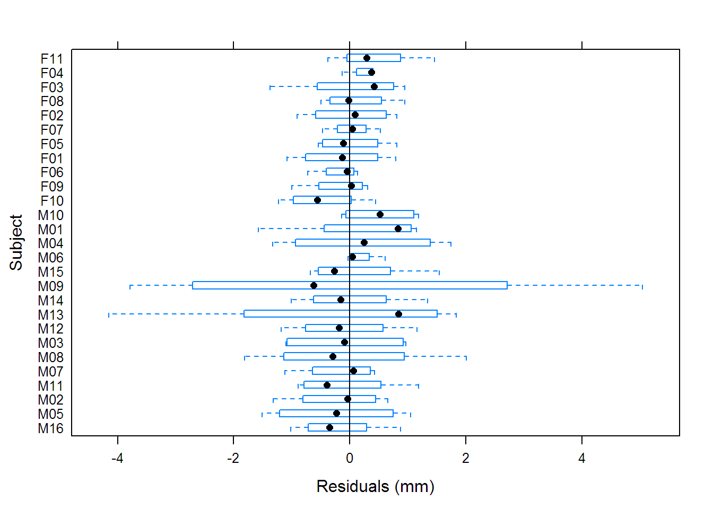
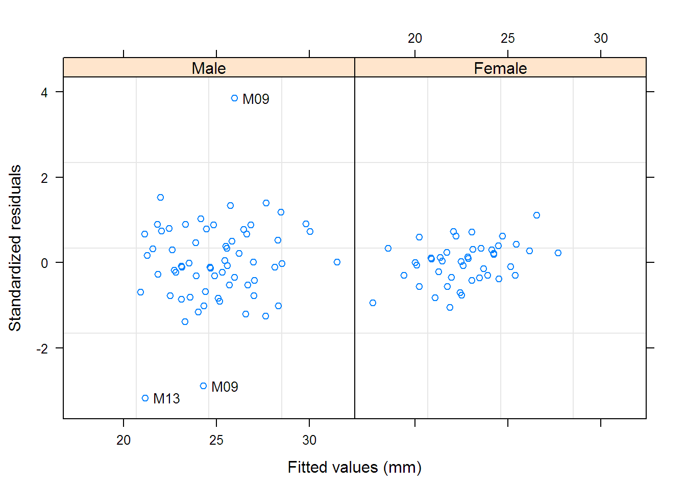
## Linear mixed-effects model fit by REML
## Data: Orthodont
## Log-restricted-likelihood: -205.76
## Fixed: distance ~ Sex + I(age - 11) + Sex:I(age - 11)
## (Intercept) SexFemale
## 24.96875 -2.32102
## I(age - 11) SexFemale:I(age - 11)
## 0.78437 -0.30483
##
## Random effects:
## Formula: ~I(age - 11) | Subject
## Structure: General positive-definite, Log-Cholesky parametrization
## StdDev Corr
## (Intercept) 1.85498 (Intr)
## I(age - 11) 0.15652 0.394
## Residual 1.62959
##
## Variance function:
## Structure: Different standard deviations per stratum
## Formula: ~1 | Sex
## Parameter estimates:
## Male Female
## 1.00000 0.40885
## Number of Observations: 108
## Number of Groups: 27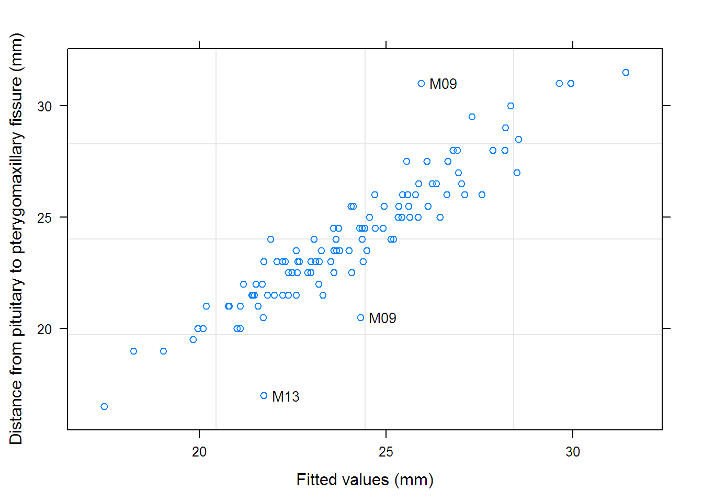
## Model df AIC BIC logLik Test L.Ratio
## fm2Orth.lme 1 8 451.35 472.51 -217.68
## fm3Orth.lme 2 9 429.52 453.32 -205.76 1 vs 2 23.832
## p-value
## fm2Orth.lme
## fm3Orth.lme <.0001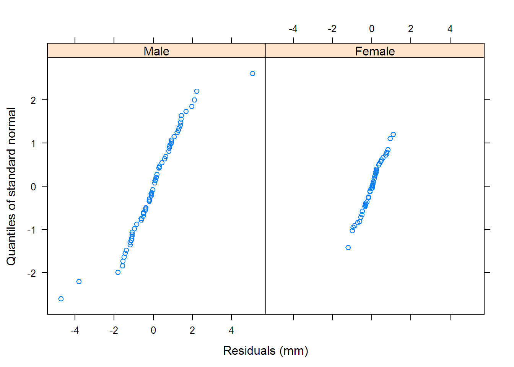
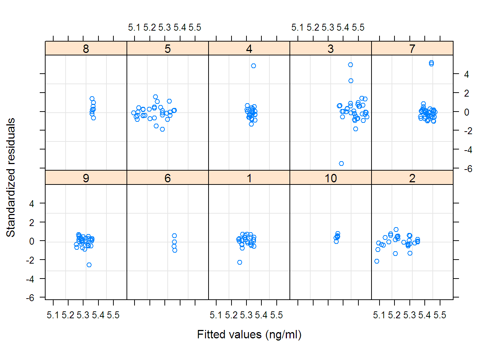
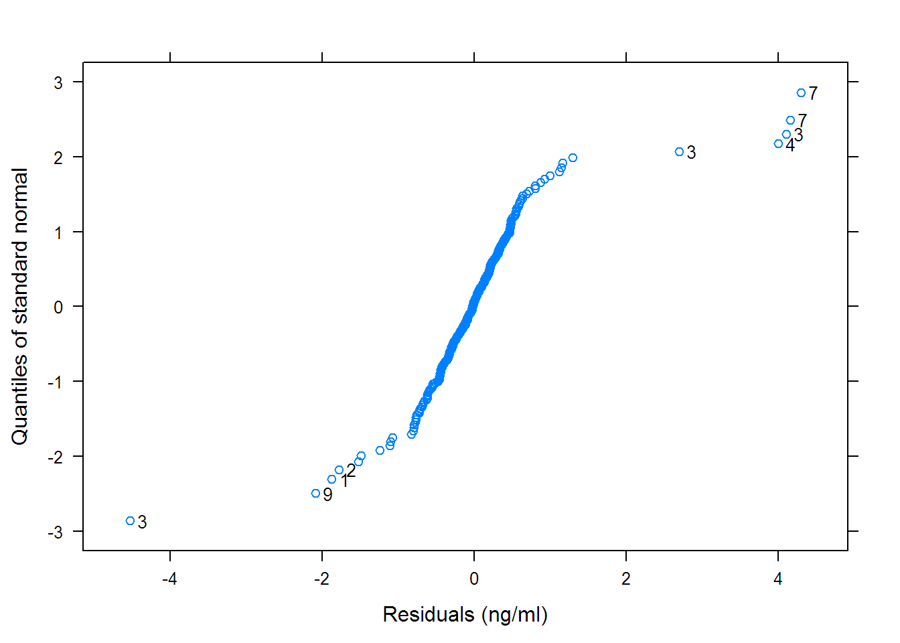
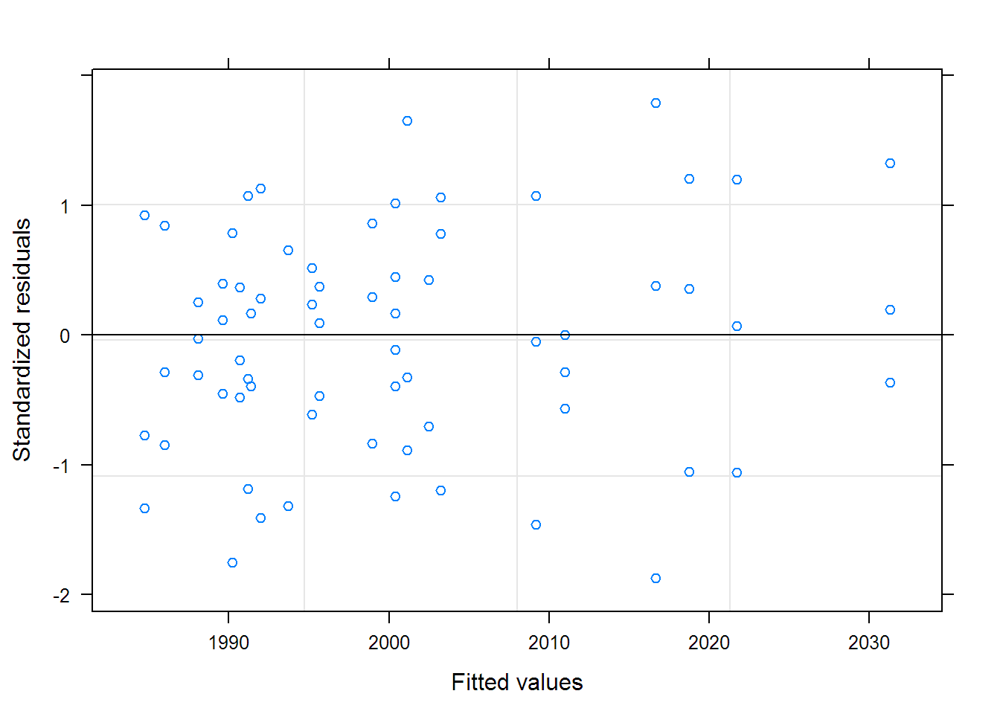
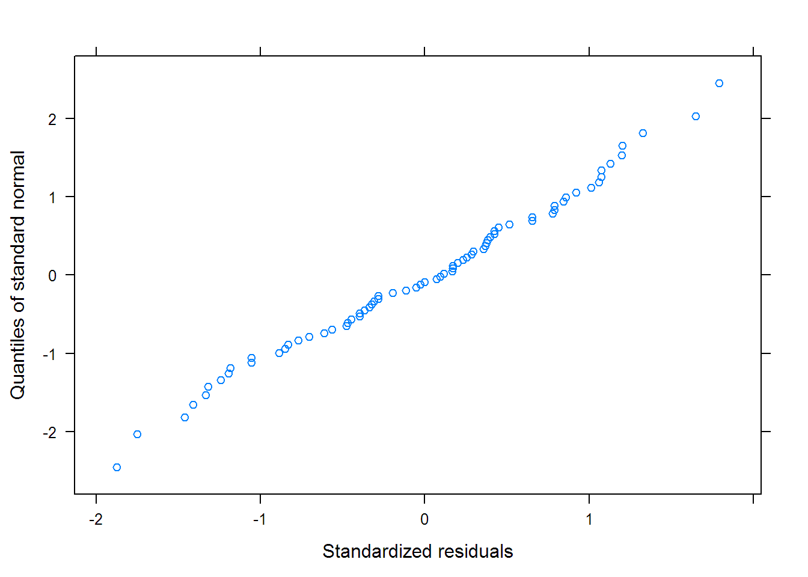
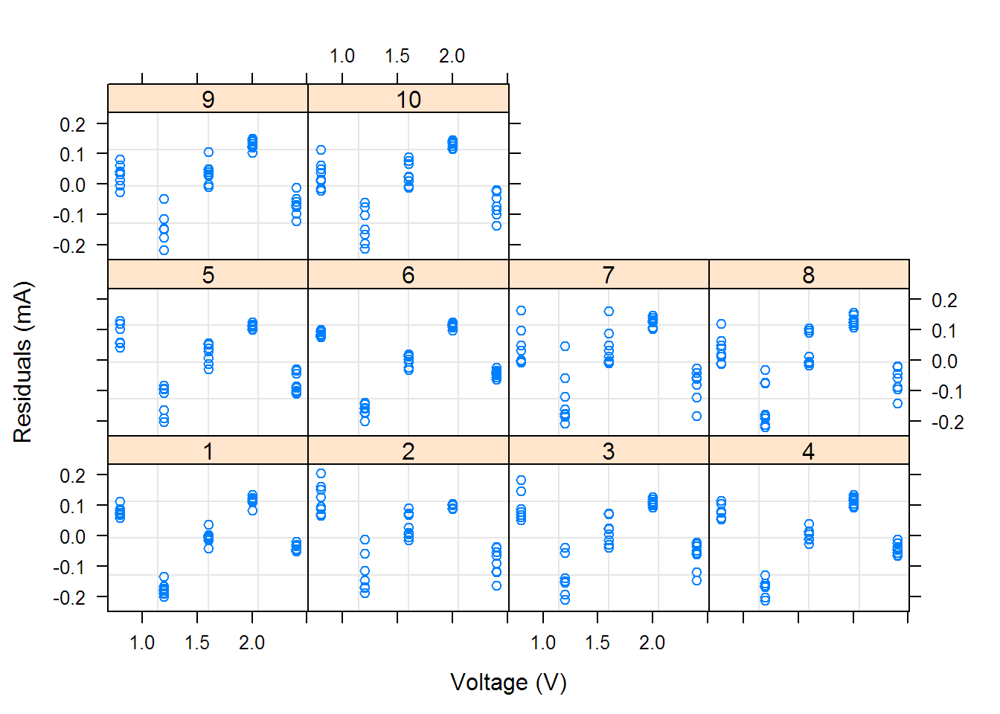
plot(fm1Wafer, resid(.) ~ voltage | Wafer,
panel = function(x, y, ...) {
panel.grid()
panel.xyplot(x, y)
panel.loess(x, y, lty = 2)
panel.abline(0, 0)
})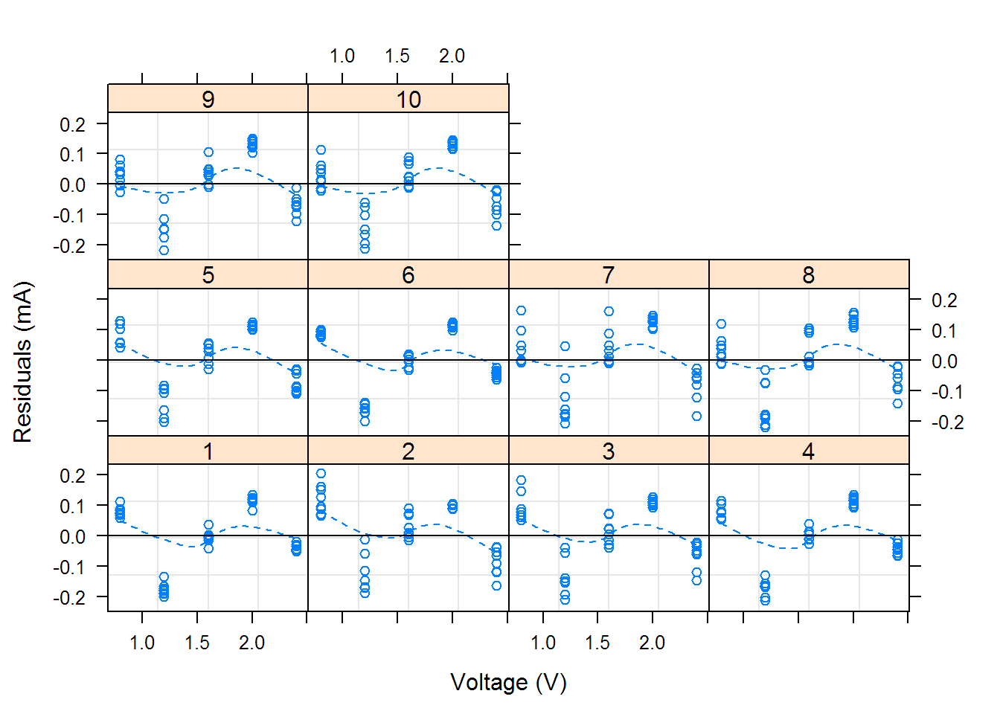
## cos(4.19 * voltage) sin(4.19 * voltage)
## -0.051872 0.130405nls(resid(fm1Wafer) ~ b3*cos(w*voltage) + b4*sin(w*voltage), Wafer,
start = list(b3 = -0.0519, b4 = 0.1304, w = 4.19))## Nonlinear regression model
## model: resid(fm1Wafer) ~ b3 * cos(w * voltage) + b4 * sin(w * voltage)
## data: Wafer
## b3 b4 w
## -0.1117 0.0777 4.5679
## residual sum-of-squares: 0.729
##
## Number of iterations to convergence: 6
## Achieved convergence tolerance: 1.12e-06fm2Wafer <- update(fm1Wafer,
. ~ . + cos(4.5679*voltage) + sin(4.5679*voltage),
random = list(Wafer=pdDiag(~voltage+I(voltage^2)),
Site=pdDiag(~voltage+I(voltage^2))))
summary(fm2Wafer)## Linear mixed-effects model fit by REML
## Data: Wafer
## AIC BIC logLik
## -1232.6 -1184.9 628.31
##
## Random effects:
## Formula: ~voltage + I(voltage^2) | Wafer
## Structure: Diagonal
## (Intercept) voltage I(voltage^2)
## StdDev: 0.12888 0.34865 0.049074
##
## Formula: ~voltage + I(voltage^2) | Site %in% Wafer
## Structure: Diagonal
## (Intercept) voltage I(voltage^2) Residual
## StdDev: 0.039675 0.23437 0.047541 0.011325
##
## Fixed effects: current ~ voltage + I(voltage^2) + cos(4.5679 * voltage) + sin(4.5679 * voltage)
## Value Std.Error DF t-value p-value
## (Intercept) -4.2554 0.042235 316 -100.756 0
## voltage 5.6224 0.114161 316 49.249 0
## I(voltage^2) 1.2585 0.016958 316 74.212 0
## cos(4.5679 * voltage) -0.0956 0.001124 316 -85.049 0
## sin(4.5679 * voltage) 0.1043 0.001503 316 69.416 0
## Correlation:
## (Intr) voltag I(v^2) c(4.*v
## voltage -0.029
## I(voltage^2) 0.060 -0.031
## cos(4.5679 * voltage) 0.162 -0.082 0.172
## sin(4.5679 * voltage) 0.200 -0.101 0.212 0.567
##
## Standardized Within-Group Residuals:
## Min Q1 Med Q3 Max
## -2.427248 -0.403233 0.025346 0.393642 2.842694
##
## Number of Observations: 400
## Number of Groups:
## Wafer Site %in% Wafer
## 10 80## Approximate 95% confidence intervals
##
## Fixed effects:
## lower est. upper
## (Intercept) -4.338485 -4.255388 -4.172292
## voltage 5.397744 5.622357 5.846969
## I(voltage^2) 1.225147 1.258512 1.291878
## cos(4.5679 * voltage) -0.097768 -0.095557 -0.093347
## sin(4.5679 * voltage) 0.101388 0.104345 0.107303
## attr(,"label")
## [1] "Fixed effects:"
##
## Random Effects:
## Level: Wafer
## lower est. upper
## sd((Intercept)) 0.080182 0.128884 0.207166
## sd(voltage) 0.213593 0.348651 0.569105
## sd(I(voltage^2)) 0.029023 0.049074 0.082979
## Level: Site
## lower est. upper
## sd((Intercept)) 0.021955 0.039675 0.071696
## sd(voltage) 0.190881 0.234373 0.287774
## sd(I(voltage^2)) 0.038290 0.047541 0.059028
##
## Within-group standard error:
## lower est. upper
## 0.0092746 0.0113252 0.0138292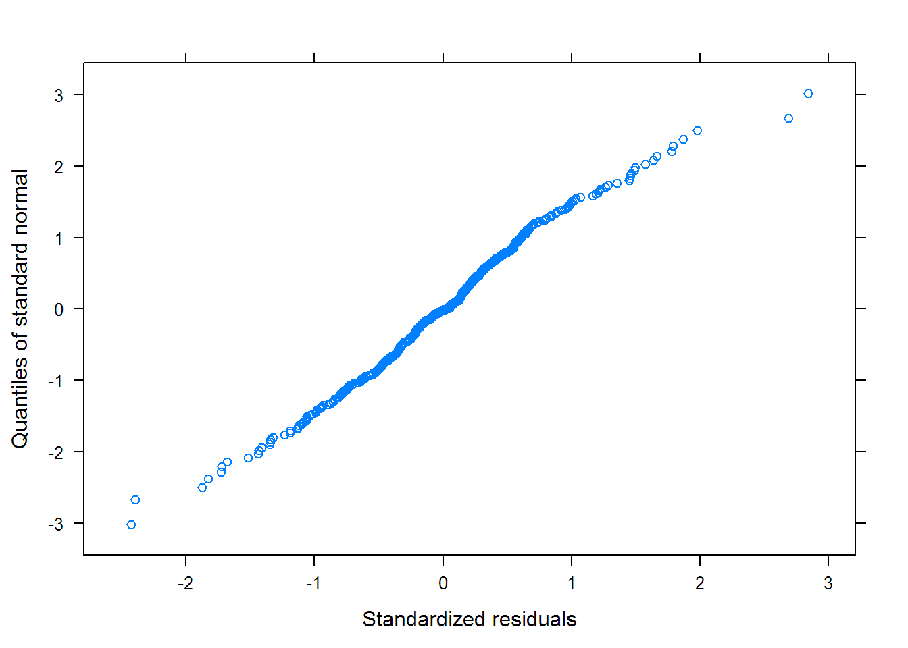
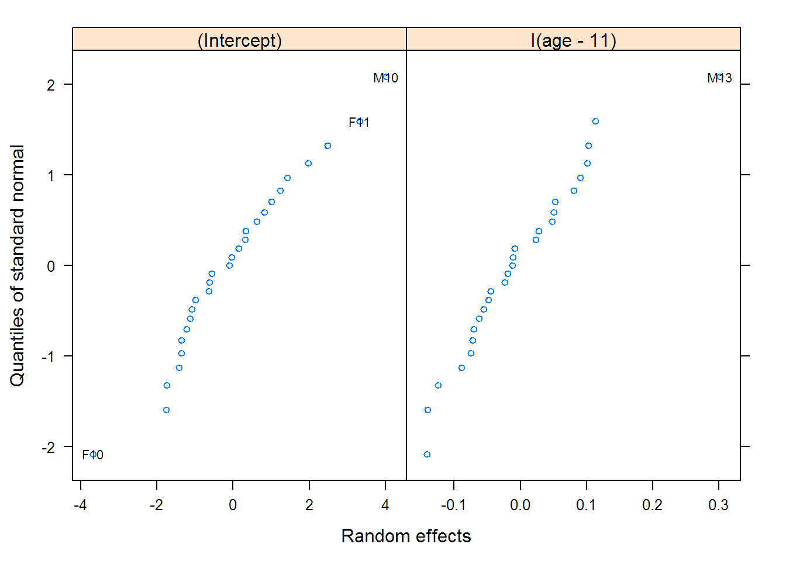
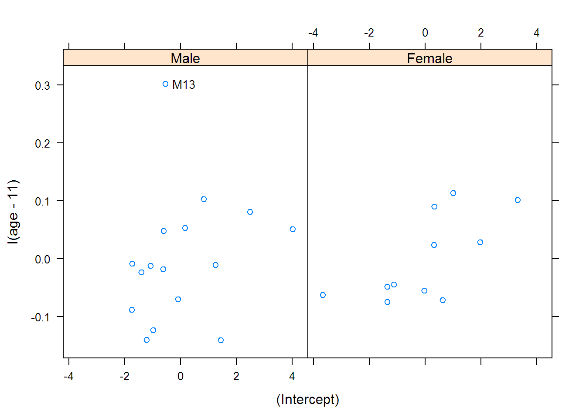
## Linear mixed-effects model fit by REML
## Data: IGF
## Log-restricted-likelihood: -297.4
## Fixed: conc ~ age
## (Intercept) age
## 5.3690370 -0.0019301
##
## Random effects:
## Formula: ~age | Lot
## Structure: Diagonal
## (Intercept) age Residual
## StdDev: 3.6221e-05 0.0053722 0.8218
##
## Number of Observations: 237
## Number of Groups: 10## (Intercept) age
## 5.7876e-05 2.7833e+00## Model df AIC BIC logLik Test L.Ratio
## fm2IGF.lme 1 5 604.8 622.10 -297.4
## fm3IGF.lme 2 4 602.8 616.64 -297.4 1 vs 2 1.4739e-07
## p-value
## fm2IGF.lme
## fm3IGF.lme 0.9997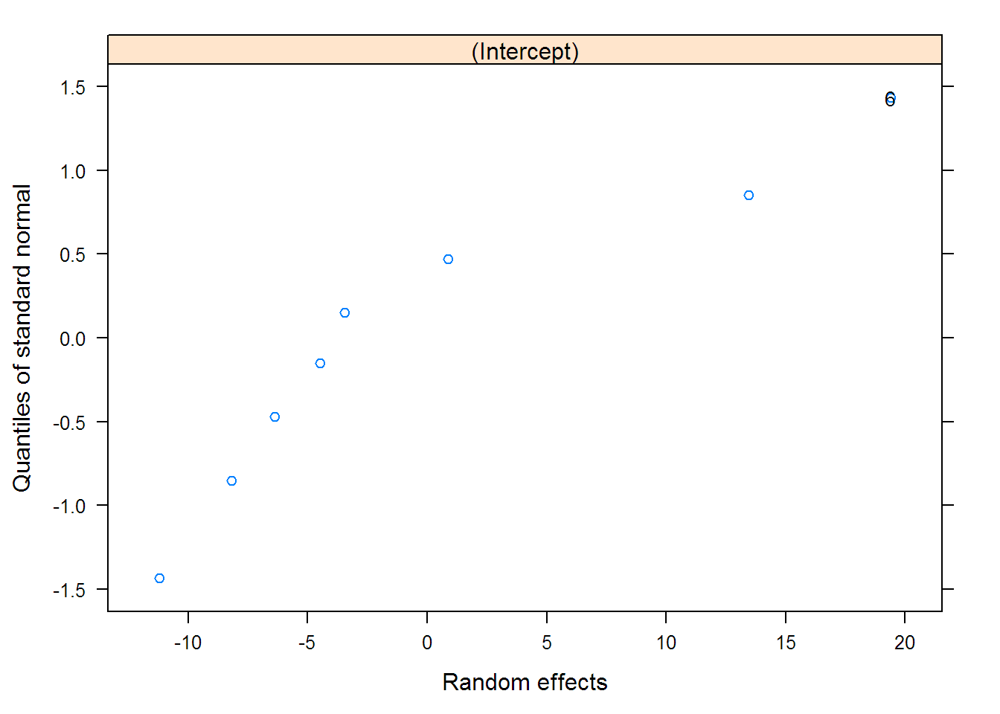
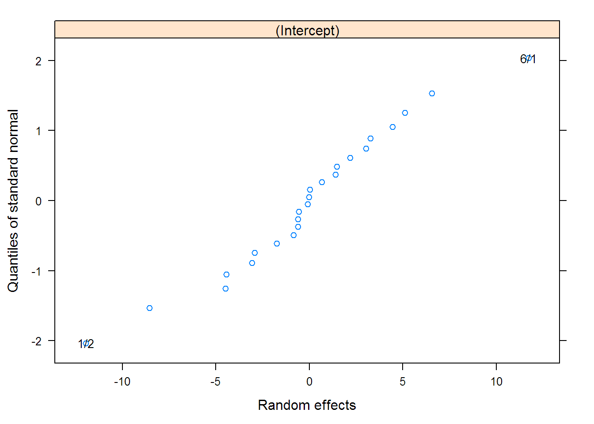
#fm3Wafer <- update(fm2Wafer,
# random = list(Wafer = ~voltage+I(voltage^2),
# Site = pdDiag(~voltage+I(voltage^2))),
# control = list(msVerbose = TRUE, msMaxIter = 200)
# )
#fm3Wafer
#anova(fm2Wafer, fm3Wafer)
#fm4Wafer <- update(fm2Wafer,
# random = list(Wafer = ~ voltage + I(voltage^2),
# Site = pdBlocked(list(~1,
# ~voltage+I(voltage^2) - 1))),
# control = list(msVerbose = TRUE,
# msMaxIter = 200))
#fm4Wafer
#anova(fm3Wafer, fm4Wafer)
#qqnorm(fm4Wafer, ~ranef(., level = 2), id = 0.05,
# cex = 0.7, layout = c(3, 1))
# The next line is not in the book but is needed to get fm1Machine
fm1Machine <-
lme(score ~ Machine, data = Machines, random = ~ 1 | Worker)
(fm3Machine <- update(fm1Machine, random = ~Machine-1|Worker))## Linear mixed-effects model fit by REML
## Data: Machines
## Log-restricted-likelihood: -104.16
## Fixed: score ~ Machine
## (Intercept) MachineB MachineC
## 52.3556 7.9667 13.9167
##
## Random effects:
## Formula: ~Machine - 1 | Worker
## Structure: General positive-definite, Log-Cholesky parametrization
## StdDev Corr
## MachineA 4.07928 MachnA MachnB
## MachineB 8.62529 0.803
## MachineC 4.38948 0.623 0.771
## Residual 0.96158
##
## Number of Observations: 54
## Number of Groups: 6## user system elapsed
## 41.60 1.80 46.42